Circuitos CC
Introducción
"DC" significaDdirectoCcorriente, que puede referirse a voltaje o corriente en una polaridad o dirección constante, respectivamente. Estos experimentos están diseñados para presentarle varios conceptos importantes de electricidad relacionados con los circuitos de CC.
Baterías en serie
PIEZAS Y MATERIALES
- Dos baterías de 6 voltios
- Una batería de 9 voltios
En realidad, baterías de cualquier tamaño serán suficientes para este experimento, pero se recomienda tener al menos dos voltajes diferentes disponibles para hacerlo más interesante.
REFERENCIAS CRUZADAS
Lecciones en circuitos eléctricos, Volumen 1, capítulo 5: "Circuitos en serie y en paralelo"
Lecciones en circuitos eléctricos, Volumen 1, capítulo 11: "Baterías y sistemas de energía"
OBJETIVOS DE APRENDIZAJE
- Cómo conectar baterías para obtener diferentes niveles de voltaje
DIAGRAMA ESQUEMÁTICO
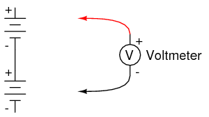
ILUSTRACIÓN
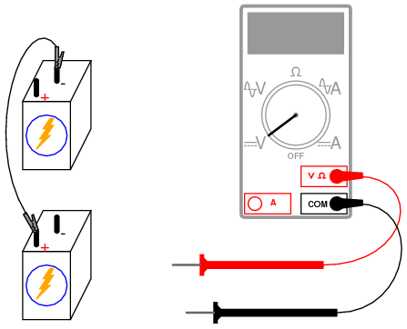
INSTRUCCIONES
Conexión de componentes enseriesignifica conectarlos en línea entre sí, de modo que haya un solo camino para que los electrones fluyan a través de todos ellos. Si conectas baterías de manera que el positivo de una se conecte con el negativo de la otra, encontrarás que sus respectivos voltajes se suman. Mida el voltaje en cada batería individualmente mientras están conectadas, luego mida el voltaje total en ambas, así:
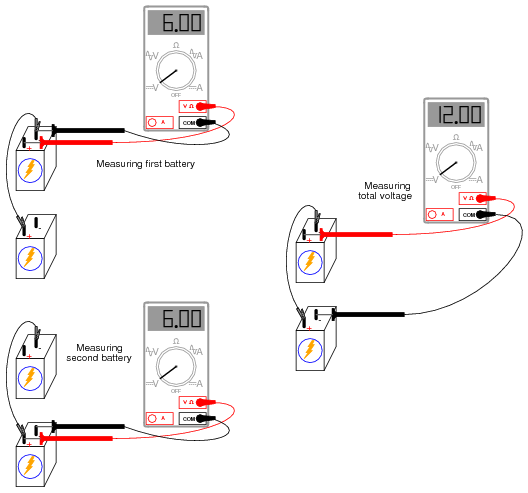
Intente conectar baterías de diferentes tamaños en serie entre sí, por ejemplo una batería de 6 voltios con una batería de 9 voltios. ¿Cuál es el voltaje total en este caso? Intente invertir las conexiones de los terminales de solo una de estas baterías, de modo que queden opuestas entre sí así:
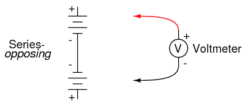
¿Cómo se compara el voltaje total en esta situación con la anterior con ambas baterías "ayudando"? Tenga en cuenta la polaridad del voltaje total como lo indica la indicación del voltímetro y la orientación de la sonda de prueba. Recuerde, si la indicación digital del medidor es un número positivo, la sonda roja es positiva (+) y la sonda negra negativa (-); si la indicación es un número negativo, la polaridad es "al revés" (rojo=negativo, negro=positivo). Los medidores analógicos simplemente no leerán correctamente si se conectan al revés, porque la aguja intenta moverse en la dirección incorrecta (izquierda en lugar de derecha). ¿Puedes predecir cuál será la polaridad general del voltaje, conociendo las polaridades de las baterías individuales y sus respectivas potencias?
Baterías en paralelo
PIEZAS Y MATERIALES
- Cuatro baterías de 6 voltios
- 12-volt light bulb, 25 o 50 watt
- Portalámparas
Las lámparas de 12 voltios de alto voltaje se pueden comprar en tiendas de suministros para vehículos recreativos (RV) y embarcaciones. Los tamaños comunes son 25 vatios y 50 vatios. Esta lámpara se utilizará como carga "pesada" para sus baterías (pesado load = one that draws substantial current).
Un portalámparas doméstico normal (120 voltios) funcionará bien para estas lámparas "RV" de bajo voltaje.
REFERENCIAS CRUZADAS
Lecciones en circuitos eléctricos, Volumen 1, capítulo 5: "Circuitos en serie y en paralelo"
Lecciones en circuitos eléctricos, Volumen 1, capítulo 11: "Baterías y sistemas de energía"
OBJETIVOS DE APRENDIZAJE
- Regulación de fuente de voltaje
- Aumentar la capacidad de corriente a través de conexiones paralelas
DIAGRAMA ESQUEMÁTICO
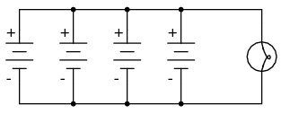
ILUSTRACIÓN
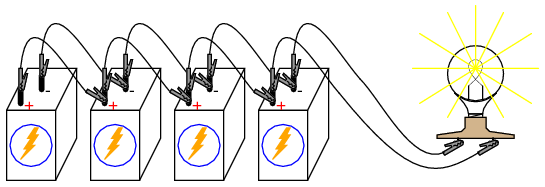
INSTRUCCIONES
Comience este experimento conectando una batería de 6 voltios a la lámpara. La lámpara, diseñada para funcionar con 12 voltios, debe brillar tenuemente cuando se alimenta con una batería de 6 voltios. Utilice su voltímetro para leer el voltaje en la lámpara de esta manera:
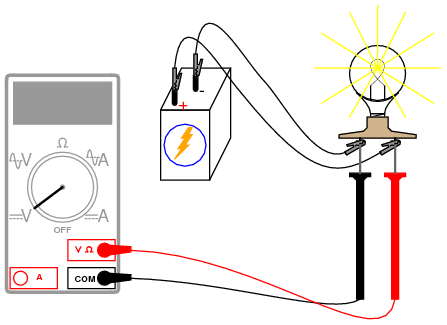
El voltímetro debe registrar un voltaje inferior al voltaje habitual de la batería. Si usa su voltímetro para leer el voltaje directamente en los terminales de la batería, también medirá un voltaje bajo allí. ¿Por qué es esto? La gran corriente consumida por la lámpara de alta potencia hace que el voltaje en los terminales de la batería se "hunda" o "caiga", debido a la caída de voltaje a través de la resistencia interna de la batería.
Podemos superar este problema conectando baterías enparaleloentre sí, de modo que cada batería sólo tiene que suministrar una fracción de la corriente total demandada por la lámpara. Las conexiones en paralelo implican hacer que todos los terminales positivos (+) de la batería sean eléctricamente comunes entre sí mediante conexión a través de cables de puente, y todos los terminales negativos (-) también sean comunes entre sí. Agregue una batería a la vez en paralelo, anotando el voltaje de la lámpara con la adición de cada batería nueva conectada en paralelo:
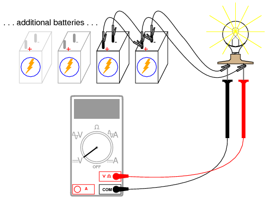
También debería haber una diferencia notable en la intensidad de la luz a medida que mejora la "caída" del voltaje.
Intente medir la corriente de una batería y compararla con la corriente total (corriente de la bombilla). Aquí se muestra la forma más sencilla de medir la corriente de una sola batería:
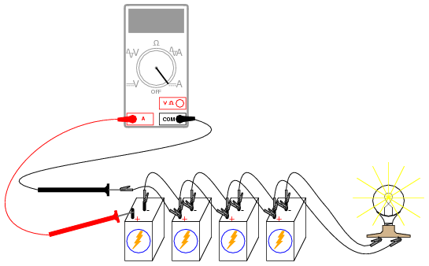
Al romper el circuito de una sola batería e insertar nuestro amperímetro dentro de esa interrupción, interceptamos la corriente de esa batería y, por lo tanto, podemos medirla. Medir la corriente total implica un procedimiento similar: haga una interrupción en algún lugar del camino que debe tomar la corriente total, luego inserte el amperímetro dentro de esa interrupción:
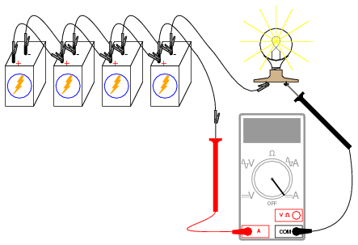
Tenga en cuenta la diferencia de corriente entre las mediciones de una sola batería y las totales.
Para obtener el máximo brillo de la bombilla, unserie paralelaSe requiere conexión. Dos baterías de 6 voltios conectadas en serie proporcionarán 12 voltios. Conectar dos de estos pares de baterías conectados en serie en paralelo mejora su capacidad de suministro de corriente para una caída de voltaje mínima:
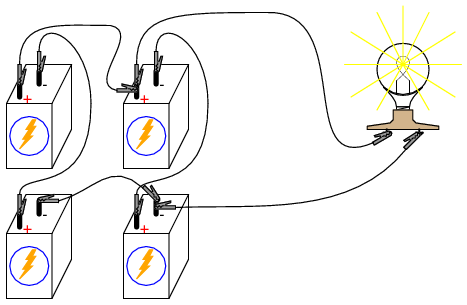
Divisor de tensión
PIEZAS Y MATERIALES
- Calculadora (o lápiz y papel para hacer aritmética)
- 6-volt battery
- Surtido de resistencias entre 1 KΩ y 100 kΩ de valor
Estoy restringiendo deliberadamente los valores de resistencia entre 1 kΩ y 100 kΩ para obtener lecturas precisas de voltaje y corriente con su medidor. Con valores de resistencia muy bajos, la resistencia interna del amperímetro tiene un impacto significativo en la precisión de la medición. Los valores de resistencia muy altos pueden causar problemas en la medición de voltaje, ya que la resistencia interna del voltímetro cambia sustancialmente la resistencia del circuito cuando se conecta en paralelo con una resistencia de alto valor.
REFERENCIAS CRUZADAS
Lecciones en circuitos eléctricos, Volumen 1, capítulo 6: "Circuitos divisores y leyes de Kirchhoff"
OBJETIVOS DE APRENDIZAJE
- Uso del voltímetro
- uso del amperímetro
- uso del ohmímetro
- Uso de la ley de Ohm
- Uso de la Ley de Voltaje de Kirchhoff ("KVL")
- Diseño de divisor de voltaje.
DIAGRAMA ESQUEMÁTICO
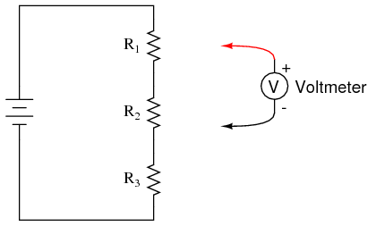
ILUSTRACIÓN
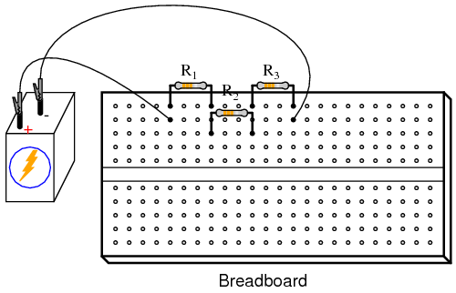
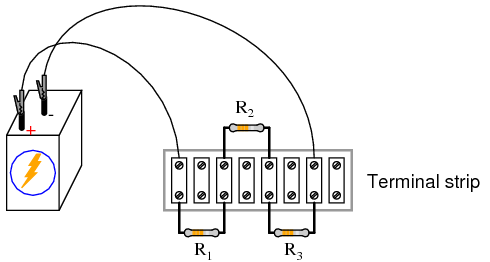
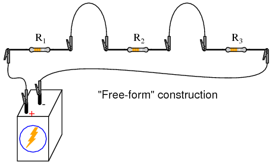
INSTRUCCIONES
Aquí se muestran tres métodos diferentes de construcción de circuitos: en una placa de pruebas, en una regleta de terminales y en "forma libre". Intente construir el mismo circuito en cada sentido para familiarizarse con las diferentes técnicas de construcción y sus respectivas ventajas. El método de "forma libre", en el que todos los componentes se conectan entre sí con cables de puente estilo "cocodrilo", es el menos profesional, pero apropiado para un experimento simple como este. La construcción de placas de pruebas es versátil y permite una alta densidad de componentes (muchas piezas en un espacio pequeño), pero es bastante temporal. Las regletas de terminales ofrecen una forma de construcción mucho más permanente a costa de una baja densidad de componentes.
Seleccione tres resistencias de su surtido de resistencias y mida la resistencia de cada una con un óhmetro. Anote estos valores de resistencia con lápiz y papel, como referencia en los cálculos de su circuito.
Conecte las tres resistencias en serie y a la batería de 6 voltios, como se muestra en las ilustraciones. Mida el voltaje de la batería con un voltímetro después de que se le hayan conectado las resistencias y anote también esta cifra de voltaje en un papel. Es recomendable medir el voltaje de la batería mientras alimenta el circuito de resistencia porque este voltaje puede diferir ligeramente de una condición sin carga. Vimos este efecto exagerado en el experimento de la "batería en paralelo" mientras se alimentaba una lámpara de alto voltaje: el voltaje de la batería tiende a "hundirse" o "caer" bajo carga. Aunque este circuito de tres resistencias no debería presentar una carga lo suficientemente pesada (no consume suficiente corriente) como para causar una "caída" significativa de voltaje, medir el voltaje de la batería bajo carga es una buena práctica científica porque proporciona datos más realistas.
Utilice la ley de Ohm (I=E/R) para calcular la corriente del circuito, luego verifique este valor calculado midiendo la corriente con un amperímetro como este (versión "regleta de terminales" del circuito que se muestra como una elección arbitraria en el método de construcción):
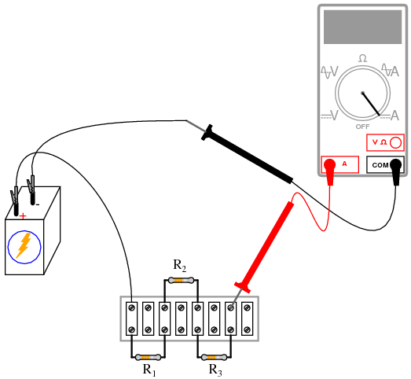
Si los valores de su resistencia están realmente entre 1 kΩ y 100 kΩ, y el voltaje de la batería es de aproximadamente 6 voltios, la corriente debe ser un valor muy pequeño, en el rango de miliamperios (mA) o microamperios (μA). Cuando mide la corriente con un medidor digital, el medidor puede mostrar el símbolo de prefijo métrico apropiado (m o µ) en alguna esquina de la pantalla. Estos indicadores de prefijo métrico son fáciles de pasar por alto al leer la pantalla de un medidor digital, ¡así que preste mucha atención!
El valor medido de la corriente debe coincidir estrechamente con el cálculo de la ley de Ohm. Ahora, tome ese valor calculado para la corriente y multiplíquelo por las resistencias respectivas de cada resistencia para predecir sus caídas de voltaje (E=IR). Cambie su multímetro al modo "voltaje" y mida el voltaje caído en cada resistencia, verificando la precisión de sus predicciones. Nuevamente, debería haber una estrecha concordancia entre las cifras de voltaje calculadas y medidas.
Cada caída de voltaje de la resistencia será una fracción o porcentaje del voltaje total, de ahí el nombredivisor de voltajedado a este circuito. Este valor fraccionario está determinado por la resistencia de la resistencia particular y la resistencia total. Si una resistencia cae el 50% del voltaje total de la batería en un circuito divisor de voltaje, esa proporción del 50% permanecerá igual siempre que no se alteren los valores de la resistencia. Entonces, si el voltaje total es de 6 voltios, el voltaje a través de esa resistencia será el 50% de 6, o 3 voltios. Si el voltaje total es de 20 voltios, esa resistencia caerá 10 voltios, o el 50% de 20 voltios.
La siguiente parte de este experimento es una validación de la Ley de Voltaje de Kirchhoff. Para ello, es necesario identificar cada punto único del circuito con un número. Los puntos que son eléctricamente comunes (conectados directamente entre sí con una resistencia insignificante entre ellos) deben llevar el mismo número. Aquí se muestra un ejemplo que utiliza los números del 0 al 3 de forma ilustrativa y esquemática. En la ilustración, muestro cómo se pueden etiquetar los puntos del circuito con pequeños trozos de cinta, números escritos en la cinta:
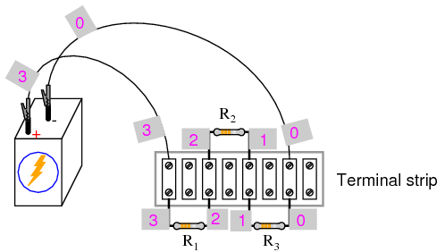
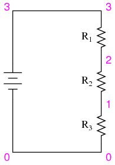
Usando undigitalVoltímetro (¡esto es importante!), mida las caídas de voltaje alrededor del bucle formado por los puntos 0-1-2-3-0. Escribe en un papel cada uno de estos voltajes, junto con su respectivo signo según lo indica el medidor. En otras palabras, si el voltímetro registra un voltaje negativo como -1,325 voltios, debes escribir esa cifra como un número negativo. HacernotInvierta las conexiones de la sonda del medidor con el circuito para que el número se lea "correctamente". ¡El signo matemático es muy significativo en esta fase del experimento! A continuación se muestra una secuencia de ilustraciones que muestran cómo "recorrer" el circuito, comenzando y terminando en el punto 0:
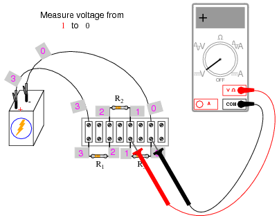
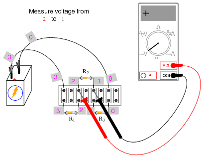
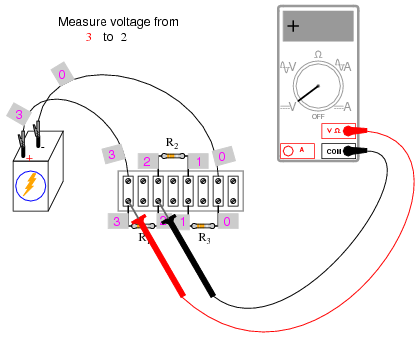
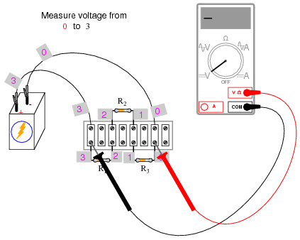
Usar el voltímetro para "pasar" por el circuito de esta manera produce tres cifras de voltaje positivas y una negativa:
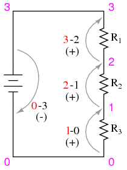
Estas cifras, sumadas algebraicamente ("algebraicamente" = respetando los signos de los números), deben ser iguales a cero. Este es el principio fundamental de la Ley de Voltaje de Kirchhoff: que la suma algebraica de todas las caídas de voltaje en un "bucle" suman cero.
Es importante darse cuenta de que el "bucle" recorrido no tiene por qué ser el mismo camino que sigue la corriente en el circuito, ni siquiera un camino de corriente legítimo. El circuito en el que contamos las caídas de voltaje puede sercualquier colección de puntos, siempre que comience y termine en el mismo punto. Por ejemplo, podemos medir y sumar los voltajes en el bucle 1-2-3-1, y formarán una suma de cero también:
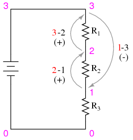
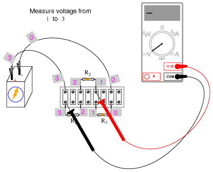
Intente pasar entre cualquier conjunto de puntos, en cualquier orden, alrededor de su circuito y compruebe usted mismo que la suma algebraica siempre es igual a cero. Esta ley es válida independientemente de la configuración del circuito: en serie, en paralelo, en serie-paralelo o incluso en una red irreducible.
La Ley de Voltaje de Kirchhoff es un concepto poderoso que nos permite predecir la magnitud y la polaridad de los voltajes en un circuito mediante el desarrollo de ecuaciones matemáticas para análisis basadas en la verdad de que todos los voltajes en un bucle suman cero. Este experimento pretende proporcionar evidencia empírica y una comprensión profunda de la ley de voltaje de Kirchhoff como principio general.
SIMULACIÓN POR COMPUTADORA
Netlist (cree un archivo de texto que contenga el siguiente texto, textualmente):
Voltage divider v1 3 0 r1 3 2 5k r2 2 1 3k r3 1 0 2k .dc v1 6 6 1 * Voltages around 0-1-2-3-0 loop algebraically add to zero: .print dc v(1,0) v(2,1) v(3,2) v(0,3) * Voltages around 1-2-3-1 loop algebraically add to zero: .print dc v(2,1) v(3,2) v(1,3) .end
Esta simulación por computadora se basa en los números de puntos que se muestran en los diagramas anteriores para ilustrar la Ley de voltaje de Kirchhoff (puntos 0 a 3). Los valores de resistencia se eligieron para proporcionar proporciones de 50%, 30% y 20% del voltaje total en R.1, R2y R3, respectivamente. Siéntase libre de modificar el valor de la fuente de voltaje (en el ".dc"línea, que aquí se muestra como 6 voltios) y/o los valores de resistencia.
Cuando se ejecuta, SPICE imprimirá una línea de texto que contiene cuatro cifras de voltaje, luego otra línea de texto que contiene tres cifras de voltaje, junto con muchas otras líneas de texto que describen el proceso de análisis. Suma las cifras de voltaje en cada línea para ver que la suma es cero.
Divisor de corriente
PIEZAS Y MATERIALES
- Calculadora (o lápiz y papel para hacer aritmética)
- 6-volt battery
- Surtido de resistencias entre 1 KΩ y 100 kΩ de valor
REFERENCIAS CRUZADAS
Lecciones en circuitos eléctricos, Volumen 1, capítulo 6: "Circuitos divisores y leyes de Kirchhoff"
OBJETIVOS DE APRENDIZAJE
- Uso del voltímetro
- uso del amperímetro
- uso del ohmímetro
- Uso de la ley de Ohm
- Uso de la ley de corriente de Kirchhoff (KCL)
- Diseño del divisor de corriente
DIAGRAMA ESQUEMÁTICO
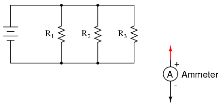
ILUSTRACIÓN
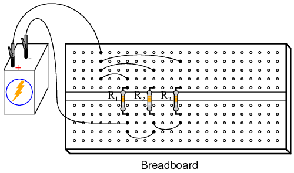
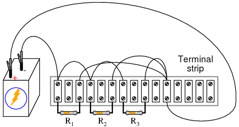
Normalmente, se considera inadecuado asegurar más de dos cables bajo un solo tornillo de regleta de terminales. En esta ilustración, muestro tres cables que se unen en el tornillo superior del terminal más a la derecha usado en esta tira. Esto se hace para facilitar la prueba de un concepto (de actualidad)sumandoen un nodo de circuito), y no representa una técnica de montaje profesional.
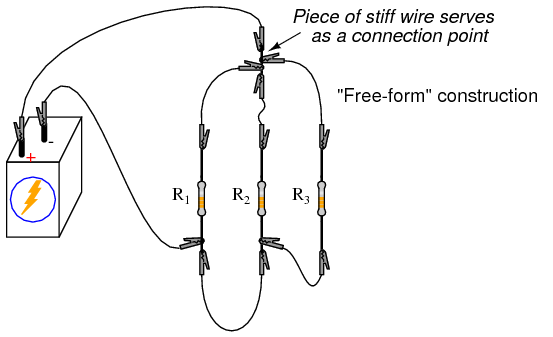
El carácter no profesional del método de construcción de "forma libre" no merece más comentarios.
INSTRUCCIONES
Una vez más, muestro diferentes métodos para construir el mismo circuito: placa de pruebas, regleta de terminales y "forma libre". Experimenta con todos estos formatos constructivos y familiarízate con sus respectivas ventajas y desventajas.
Seleccione tres resistencias de su surtido de resistencias y mida la resistencia de cada una con un óhmetro. Anote estos valores de resistencia con lápiz y papel, como referencia en los cálculos de su circuito.
Conecte las tres resistencias en paralelo entre sí y con la batería de 6 voltios, como se muestra en las ilustraciones. Mida el voltaje de la batería con un voltímetro después de que se le hayan conectado las resistencias y anote también esta cifra de voltaje en un papel. Es recomendable medir el voltaje de la batería mientras alimenta el circuito de resistencia porque este voltaje puede diferir ligeramente de una condición sin carga.
Mida el voltaje en cada una de las tres resistencias. ¿Qué notas? En un circuito en serie, lacorrientees igual en todos los componentes en un momento dado. En un circuito paralelo,Voltajees la variable común entre todos los componentes.
Utilice la ley de Ohm (I=E/R) para calcular la corriente a través de cada resistencia, luego verifique este valor calculado midiendo la corriente con un amperímetro digital. Coloque la sonda roja del amperímetro en el punto donde los extremos positivos (+) de las resistencias se conectan entre sí y levante un cable de resistencia a la vez, conectando la sonda negra del medidor al cable levantado. De esta manera, mida la corriente de cada resistencia, observando tanto la magnitud de la corriente como la polaridad. En estas ilustraciones, muestro un amperímetro utilizado para medir la corriente a través de R1:
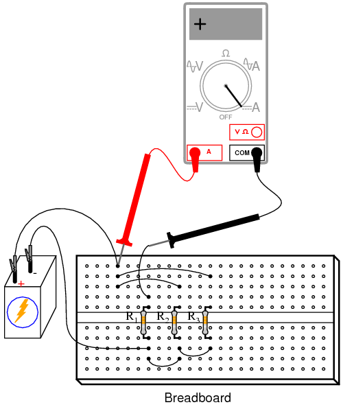
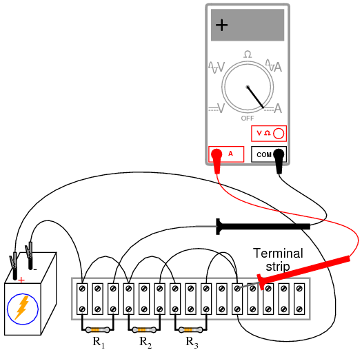
Mida la corriente para cada una de las tres resistencias, comparándola con las cifras actuales calculadas previamente. Con el amperímetro digital conectado como se muestra, las tres indicaciones deben ser positivas, no negativas.
Ahora, mida la corriente total del circuito, manteniendo la sonda roja del amperímetro en el mismo punto del circuito, pero desconectando el cable que va al lado positivo (+) de la batería y tocando la sonda negra:
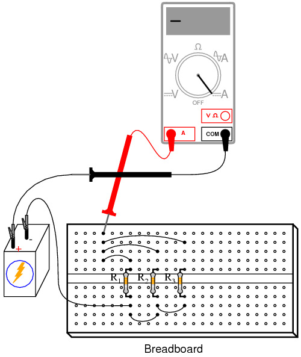
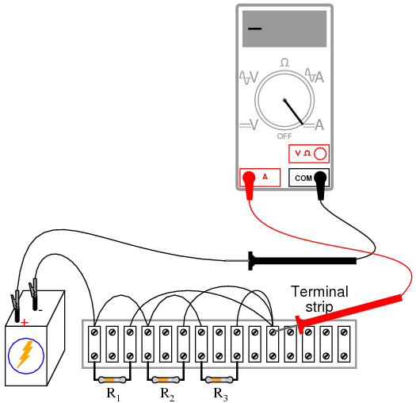
Observe tanto la magnitud como el signo de la corriente indicados por el amperímetro. Sume esta cifra (algebraicamente) a las tres corrientes de resistencia. ¿Qué observas sobre el resultado que es similar al experimento de la ley de voltaje de Kirchhoff? La ley de corrientes de Kirchhoff se aplica a las corrientes que se "suman" en un punto (nodo) de un circuito, al igual que la ley de voltaje de Kirchhoff se aplica a la suma de voltajes en un bucle en serie: en ambos casos, la suma algebraica es igual a cero.
Esta Ley también es muy útil en el análisis matemático de circuitos. Junto con la Ley de Voltaje de Kirchhoff, nos permite generar ecuaciones que describen varias variables en un circuito, que luego pueden resolverse utilizando una variedad de técnicas matemáticas.
Ahora considere las cuatro mediciones de corriente como números positivos: los primeros tres representan la corriente a través de cada resistencia y el cuarto representa la corriente total del circuito como una suma positiva de las tres corrientes "derivadas". Cada corriente de resistencia (rama) es una fracción o porcentaje de la corriente total. Esta es la razón por la que un circuito de resistencia en paralelo a menudo se denominadivisor de corriente.
Desconecte la batería del resto del circuito y mida la resistencia entre las resistencias en paralelo. Puedes leer la resistencia total a lo largoanyde los terminales de las resistencias individuales y obtener la misma indicación: será un valor menor que cualquiera de los valores de las resistencias individuales. Esto suele sorprender a los nuevos estudiantes de electricidad: leer exactamente la misma cifra de resistencia (total) al conectar un óhmetro a través dealguiende un conjunto de resistencias conectadas en paralelo. Sin embargo, tiene sentido si se consideran los puntos de un circuito paralelo en términos de similitud eléctrica. Todos los componentes paralelos están conectados entre dos conjuntos de puntos eléctricamente comunes. Dado que el medidor no puede distinguir entre puntos comunes entre sí mediante conexión directa, leer la resistencia a través de una resistencia es leer la resistencia de todas ellas. Lo mismo ocurre con el voltaje, razón por la cual el voltaje de la batería se puede leer a través de cualquiera de las resistencias tan fácilmente como se puede leer directamente a través de los terminales de la batería.
Si divide el voltaje de la batería (previamente medido) por esta cifra de resistencia total, debería obtener una cifra de corriente total (I=E/R) que coincida estrechamente con la cifra medida.
La relación entre la corriente de la resistencia y la corriente total es la misma que la relación entre la resistencia total y la resistencia individual. Por ejemplo, si una resistencia de 10 kΩ es parte de un circuito divisor de corriente con una resistencia total de 1 kΩ, esa resistencia conducirá 1/10 de la corriente total, cualquiera que sea el valor de esa corriente total.
SIMULACIÓN POR COMPUTADORA
Esquema con números de nodo SPICE:
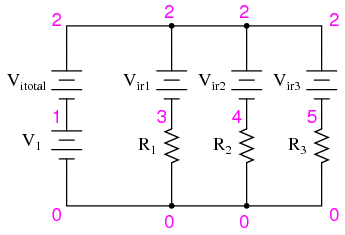
Los amperímetros en las simulaciones de SPICE son en realidad fuentes de voltaje cero insertadas en las trayectorias del flujo de electrones. Notarás las fuentes de voltaje Vir1, Vir2y Vir3están configurados en 0 voltios en la lista de red. Cuando los electrones entran por el lado negativo de una de estas baterías "ficticias" y salen por el positivo, la indicación de corriente de la batería será un número positivo. En otras palabras, estas fuentes de 0 voltios deben considerarse como amperímetros con la sonda roja en el lado de la línea larga del símbolo de la batería y la sonda negra en el lado de la línea corta.
Netlist (cree un archivo de texto que contenga el siguiente texto, textualmente):
Current divider v1 1 0 r1 3 0 2k r2 4 0 3k r3 5 0 5k vitotal 2 1 dc 0 vir1 2 3 dc 0 vir2 2 4 dc 0 vir3 2 5 dc 0 .dc v1 6 6 1 .print dc i(vitotal) i(vir1) i(vir2) i(vir3) .end
Cuando se ejecuta, SPICE imprimirá una línea de texto que contiene cuatro cifras de corriente, la primera corriente representa el total como una cantidad negativa y las otras tres representan corrientes para las resistencias R.1, R2y R3. Cuando se suman algebraicamente, la cifra negativa y las tres positivas formarán una suma de cero, como lo describe la ley de corriente de Kirchhoff.
El potenciómetro como divisor de tensión
PIEZAS Y MATERIALES
- Dos baterías de 6 voltios
- Lápiz de carbón "mina" para un portaminas de estilo mecánico
- Potenciómetro, una vuelta, 5 kΩ a 50 kΩ, conicidad lineal (catálogo de Radio Shack # 271-1714 a 271-1716)
- Potenciómetro, multivuelta, 1 kΩ a 20 kΩ (catálogo de Radio Shack n.º 271-342, 271-343, 900-8583 o 900-8587 a 900-8590)
Los potenciómetros son divisores de voltaje variable con un eje o control deslizante para establecer la relación de división. Se fabrican en versiones de montaje en panel y en placa de pruebas (placa de circuito impreso). Cualquier estilo de potenciómetro será suficiente para este experimento.
Si recupera un potenciómetro de una radio vieja u otro dispositivo de audio, probablemente obtendrá lo que se llama unreducción de audiopotenciómetro. Estos potenciómetros exhiben una relación logarítmica entre la relación de división y la posición del eje. Por el contrario, unlinealEl potenciómetro muestra una correlación directa entre la posición del eje y la relación de división de voltaje. Recomiendo encarecidamente un potenciómetro lineal para este experimento y para la mayoría de los experimentos en general.
REFERENCIAS CRUZADAS
Lecciones en circuitos eléctricos, Volumen 1, capítulo 6: "Circuitos divisores y leyes de Kirchhoff"
OBJETIVOS DE APRENDIZAJE
- Uso del voltímetro
- uso del ohmímetro
- Diseño y función del divisor de voltaje.
- Cómo se suman los voltajes en serie
DIAGRAMA ESQUEMÁTICO
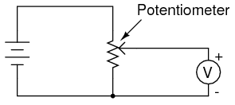
ILUSTRACIÓN
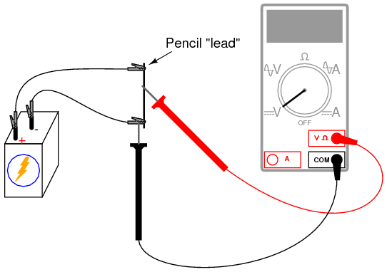
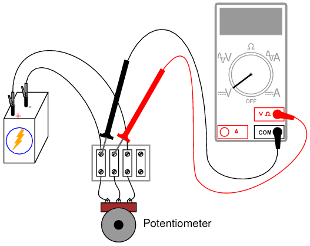
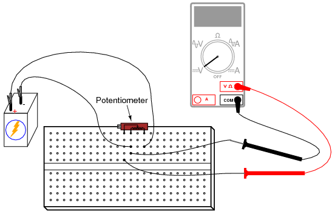
INSTRUCCIONES
Comience este experimento con el circuito de "mina" del lápiz. Los lápices utilizan una varilla hecha de una mezcla de grafito y arcilla, no de plomo (el metal), para hacer marcas negras en el papel. El grafito, al ser un conductor eléctrico mediocre, actúa como una resistencia conectada a través de la batería mediante dos cables de puente con pinzas de cocodrilo. Conecte el voltímetro como se muestra y toque la varilla de grafito con la sonda de prueba roja. Mueva la sonda roja a lo largo de la varilla y observe el cambio de indicación del voltímetro. ¿Qué posición de la sonda proporciona la mayor indicación de voltaje?
Básicamente, la varilla actúa como unparde resistencias, la relación entre las dos resistencias establecida por la posición de la punta de prueba roja a lo largo de la longitud de la varilla:
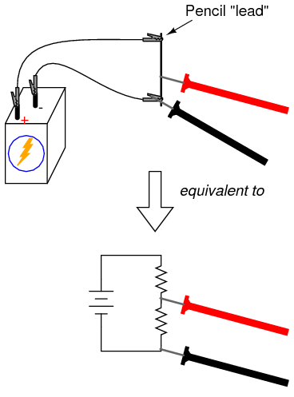
Ahora, cambie la conexión del voltímetro al circuito para medir el voltaje a través de la "resistencia superior" de la mina del lápiz, así:
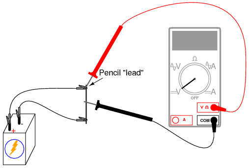
Mueva la posición de la sonda de prueba negra a lo largo de la varilla, observando la indicación del voltímetro. ¿Qué posición proporciona la mayor caída de voltaje que debe medir el medidor? ¿Se diferencia esto del acuerdo anterior? ¿Por qué?
Los potenciómetros fabricados encierran una tira resistiva dentro de una carcasa de metal o plástico y proporcionan algún tipo de mecanismo para mover un "limpiador" a lo largo de esa tira resistiva. A continuación se muestra una ilustración de la construcción de un potenciómetro giratorio:
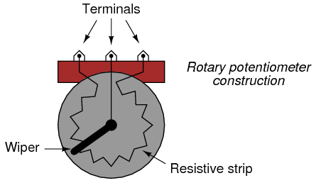
Algunos potenciómetros giratorios tienen una tira resistiva en espiral y un limpiador que se mueve axialmente a medida que gira, de modo que requiere múltiples vueltas del eje para impulsar el limpiador de un extremo al otro del rango del potenciómetro. Los potenciómetros multivueltas se utilizan en aplicaciones donde es importante un ajuste preciso.
Los potenciómetros lineales también contienen una tira resistiva, la única diferencia es la dirección de desplazamiento del limpiaparabrisas. Algunos potenciómetros lineales utilizan un mecanismo deslizante para mover el limpiador, mientras que otros utilizan un tornillo para facilitar la operación de múltiples vueltas:
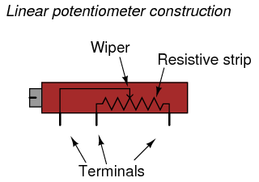
Cabe señalar que no todos los potenciómetros lineales tienen la misma asignación de pines. En algunos, el pasador del medio es el limpiaparabrisas.
Configure un circuito utilizando un potenciómetro fabricado, no uno "hecho en casa" hecho con la punta de un lápiz. Puede utilizar cualquier forma de construcción que le resulte conveniente.
Mida el voltaje de la batería mientras enciende el potenciómetro y tome nota de esta cifra de voltaje en un papel. Mida el voltaje entre el limpiador y el extremo del potenciómetro conectado al lado negativo (-) de la batería. Ajuste el mecanismo del potenciómetro hasta que el voltímetro registre exactamente 1/3 del voltaje total. Para una batería de 6 voltios, será de aproximadamente 2 voltios.
Ahora, conecte dos baterías en una configuración de ayuda en serie, para proporcionar aproximadamente 12 voltios a través del potenciómetro. Mida el voltaje total de la batería y luego mida el voltaje entre los mismos dos puntos del potenciómetro (limpiador y lado negativo). Divida el voltaje de salida medido del potenciómetro por el voltaje total medido. El cociente debe ser 1/3, la misma relación de división de voltaje que se estableció anteriormente:
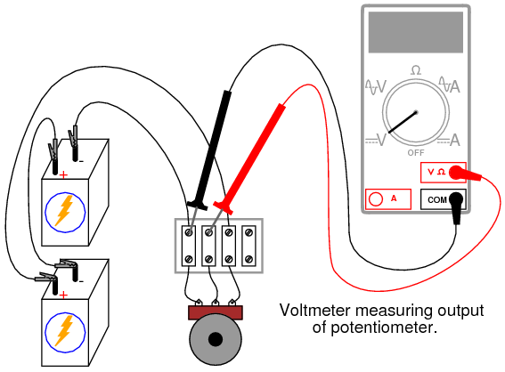
Potentiometer as a rheostat
PIEZAS Y MATERIALES
- 6 volt battery
- Potenciómetro, una vuelta, 5 kΩ, cono lineal (catálogo de Radio Shack n.° 271-1714)
- Motor pequeño "hobby", tipo imán permanente (catálogo de Radio Shack # 273-223 o equivalente)
Para este experimento, necesitará un potenciómetro de valor relativamente bajo, ciertamente no más de 5 kΩ.
REFERENCIAS CRUZADAS
Lecciones en circuitos eléctricos, Volumen 1, capítulo 2: "Ley de Ohm"
OBJETIVOS DE APRENDIZAJE
- Uso del reóstato
- Cableado de un potenciómetro como reóstato
- Control sencillo de la velocidad del motor
- Uso de voltímetro sobre amperímetro para verificar un circuito continuo.
DIAGRAMA ESQUEMÁTICO
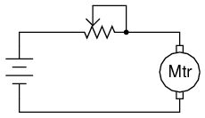
ILUSTRACIÓN
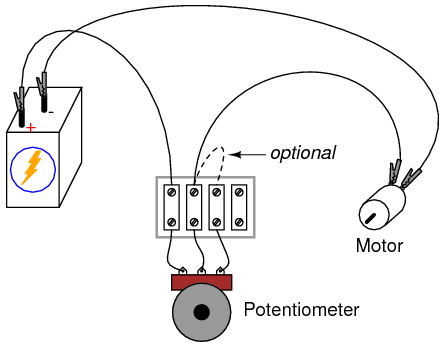
INSTRUCCIONES
Los potenciómetros encuentran su aplicación más sofisticada como divisores de voltaje, donde la posición del eje determina una relación de división de voltaje específica. Sin embargo, hay aplicaciones en las que no necesariamente necesitamos un divisor de voltaje variable, sino simplemente una resistencia variable: un dispositivo de dos terminales. Técnicamente, una resistencia variable se conoce comoreóstato, pero se puede hacer que los potenciómetros funcionen como reóstatos con bastante facilidad.
En su configuración más simple, se puede usar un potenciómetro como reóstato simplemente usando el terminal limpiador y uno de los otros terminales, dejando el tercer terminal desconectado y sin usar:
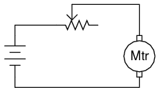
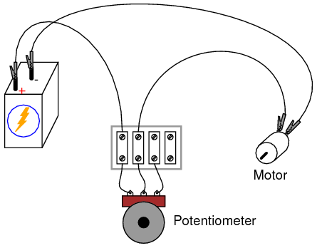
Mover el control del potenciómetro en la dirección que acerca el limpiador al otro terminal usado da como resultado una resistencia menor. La dirección del movimiento necesaria para aumentar o disminuir la resistencia se puede cambiar utilizando un conjunto diferente de terminales:
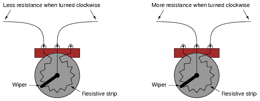
Sin embargo, tenga cuidado de no utilizar los dos terminales exteriores, ya que esto provocarásin cambios en la resistenciaa medida que se gira el eje del potenciómetro. En otras palabras, ya no funcionará comovariableresistencia:
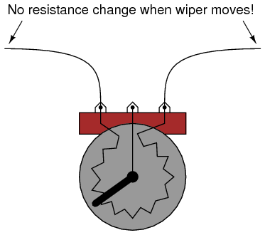
Construya el circuito como se muestra en el esquema y la ilustración, usando solo dos terminales en el potenciómetro, y vea cómo se puede controlar la velocidad del motor ajustando la posición del eje. Experimente con diferentes conexiones de terminales en el potenciómetro y observe los cambios en el control de velocidad del motor. Si su potenciómetro tiene una resistencia alta (medida entre los dos terminales exteriores), es posible que el motor no se mueva en absoluto hasta que el limpiador se acerque mucho al terminal exterior conectado.
Como puede ver, la velocidad del motor se puede hacer variable usando un reóstato conectado en serie para cambiar la resistencia total del circuito y limitar la corriente total. Sin embargo, este método simple de control de velocidad del motor es ineficiente, ya que da como resultado que el reóstato disipe (desperdicie) cantidades sustanciales de energía. Un medio mucho más eficiente de control del motor se basa en "impulsos" rápidos de potencia al motor, utilizando un dispositivo de conmutación de alta velocidad como untransistor. Se utiliza un método similar de control de potencia en los interruptores "atenuadores" de luz domésticos. Desafortunadamente, estas técnicas son demasiado sofisticadas para explorarlas en este punto de los experimentos.
Cuando se utiliza un potenciómetro como reóstato, el terminal "no utilizado" suele conectarse al terminal del limpiaparabrisas, así:
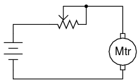
Al principio, esto parece bastante inútil, ya que no tiene ningún impacto en el control de la resistencia. Puede verificar este hecho usted mismo insertando otro cable en su circuito y comparando el comportamiento del motor antes y después del cambio:
Si el potenciómetro está en buen estado de funcionamiento, este cable adicional no supone ninguna diferencia. Sin embargo, si el limpiador alguna vez pierde contacto con la tira resistiva dentro del potenciómetro, esta conexión garantiza que el circuito no se abra por completo: que todavía habrá un camino resistivo para la corriente a través del motor. En algunas aplicaciones, esto puede ser importante. Los potenciómetros antiguos tienden a sufrir pérdidas intermitentes de contacto entre el limpiador y la tira resistiva, y si un circuito no puede tolerar la pérdida completa de continuidad (resistencia infinita) creada por esta condición, ese cable "extra" proporciona una medida de protección al mantener la continuidad del circuito.
Puede simular una "falla" de contacto del limpiador desconectando el terminal central del potenciómetro de la regleta de terminales y midiendo el voltaje en el motor para asegurarse de que todavía llegue energía, por pequeña que sea:
Habría sido válido medir la corriente del circuito en lugar del voltaje del motor para verificar un circuito completo, pero este es un método más seguro porque no implica romper el circuito para insertar un amperímetro en serie. Siempre que se utiliza un amperímetro, existe el riesgo de provocar un cortocircuito al conectarlo a una fuente de voltaje importante, lo que podría provocar daños al instrumento o lesiones personales. Los voltímetros carecen de este riesgo de seguridad inherente, por lo que siempre que se pueda realizar una medición de voltaje en lugar de una medición de corriente para verificar lo mismo, es la elección más inteligente.
Precision potentiometer
PIEZAS Y MATERIALES
- Dos potenciómetros cónicos lineales de una sola vuelta, 5 kΩ cada uno (catálogo de Radio Shack # 271-1714)
- Un potenciómetro cónico lineal de una sola vuelta, 50 kΩ (catálogo de Radio Shack # 271-1716)
- Caja de montaje de plástico o metal.
- Tres postes de conexión estilo conector "banana", u otro hardware terminal, para conexión al circuito del potenciómetro (catálogo de Radio Shack # 274-662 o equivalente)
Este es un proyecto útil para quienes desean un potenciómetro de precisión sin gastar mucho dinero. Normalmente, se utilizan potenciómetros de múltiples vueltas para obtener relaciones de división de voltaje precisas, pero existe una alternativa más económica que utiliza potenciómetros múltiples de una sola vuelta (a veces llamados "3/4 de vuelta") conectados entre sí en una red divisoria compuesta.
Debido a que este es un proyecto útil, recomiendo construirlo de forma permanente utilizando algún tipo de cerramiento del proyecto. Proveedores como Radio Shack ofrecen bonitas cajas para proyectos, pero las cajas compradas en una ferretería general son mucho menos costosas, aunque un poco feas. Lo último en bajo costo para una caja nueva son las cajas de plástico que se venden como cajas de interruptores de luz y receptáculos para cableado eléctrico doméstico.
Los conectores "banana" permiten la conexión temporal de cables de prueba y cables de puente equipados con extremos de enchufe "banana" correspondientes. La mayoría de los cables de prueba de los multímetros tienen este estilo de enchufe para insertarlos en las tomas del medidor. Los conectores banana reciben este nombre debido a su apariencia oblonga formada por tiras de acero para resortes, que mantienen un contacto firme con las paredes del conector cuando se insertan. Algunas banana jacks se llamanpostes vinculantesporque también permiten sujetar firmemente cables lisos. Los postes de unión tienen manguitos atornillados que se ajustan sobre un poste de metal. El manguito se utiliza como tuerca para asegurar un cable enrollado alrededor del poste o insertado a través de un orificio perpendicular perforado a través del poste. Una breve inspección de cualquier publicación vinculante aclarará esta descripción verbal.
REFERENCIAS CRUZADAS
Lecciones en circuitos eléctricos, Volumen 1, capítulo 6: "Circuitos divisores y leyes de Kirchhoff"
OBJETIVOS DE APRENDIZAJE
- practica de soldadura
- Función y funcionamiento del potenciómetro.
DIAGRAMA ESQUEMÁTICO
ILUSTRACIÓN
INSTRUCCIONES
Es esencial que los cables de conexión esténsoldadoa los terminales del potenciómetro, sin estar torcidos ni encintados. Dado que la acción del potenciómetro depende de la resistencia, la resistencia de todas las conexiones del cableado debe controlarse cuidadosamente hasta el mínimo indispensable. La soldadura garantiza una condición de baja resistencia entre los conductores unidos y también proporciona muy buena resistencia mecánica a las conexiones.
Cuando el circuito esté ensamblado, conecte una batería de 6 voltios a los dos postes de conexión exteriores. Conecte un voltímetro entre el poste "limpiaparabrisas" y el terminal negativo (-) de la batería. Este voltímetro medirá la "salida" del circuito.
El circuito funciona según el principio de rango comprimido: el rango de salida de voltaje de este circuito está disponible ajustando el potenciómetro R3está restringido entre los límites establecidos por los potenciómetros R1y r2. En otras palabras, si R1y r2se configuraron para generar 5 voltios y 3 voltios, respectivamente, de una batería de 6 voltios, el rango de voltajes de salida que se puede obtener ajustando R3estaría restringido de 3 a 5 voltios para la rotación completa de ese potenciómetro. Si solo se usara un potenciómetro en lugar de este circuito de tres potenciómetros, la rotación completa produciría un voltaje de salida desde 0 voltios hasta el voltaje total de la batería. La "compresión de rango" que ofrece este circuito permite un ajuste de voltaje más preciso que el que normalmente se obtendría usando un solo potenciómetro.
Operar esta red de potenciómetros es más complejo que usar un solo potenciómetro. Para comenzar, gire la R3potenciómetro completamente en el sentido de las agujas del reloj, de modo que su limpiador esté en la posición completamente "arriba" como se indica en el diagrama esquemático (eléctricamente "más cercano" a R1terminal del limpiaparabrisas). Ajustar el potenciómetro R1hasta alcanzar el límite superior de tensión indicado por el voltímetro.
Gira la R3potenciómetro completamente en el sentido contrario a las agujas del reloj, de modo que su limpiador esté en la posición completamente "abajo" como se indica en el diagrama esquemático (eléctricamente "más cercano" a R2terminal del limpiaparabrisas). Ajustar el potenciómetro R2hasta alcanzar el límite inferior de tensión, indicado por el voltímetro.
Cuando la R1o la R2Cuando se ajusta el potenciómetro interfiere con el ajuste previo del otro. En otras palabras, si R1se ajusta inicialmente para proporcionar un límite de voltaje superior de 5.000 voltios de una batería de 6 voltios, y luego R2se ajusta para proporcionar un voltaje límite inferior diferente al que era antes, R1ya no estará configurado en 5.000 voltios.
Para obtener límites de voltaje superior e inferior precisos, gire R3completamente en el sentido de las agujas del reloj para leer y ajustar el voltaje de R1, luego gire R3completamente en sentido antihorario para leer y ajustar el voltaje de R2, repitiendo según sea necesario.
Técnicamente, este fenómeno de un ajuste que afecta al otro se conoce comointeracción, y generalmente no es deseable debido al esfuerzo adicional que se requiere para configurar y restablecer los ajustes. La razón por la que R.1y r2se especificaron como 10 veces menos resistencia que R3es minimizar este efecto. Si los tres potenciómetros tuvieran el mismo valor de resistencia, la interacción entre R1y r2Sería más grave, aunque manejable con paciencia. Tenga en cuenta que no es necesario establecer con precisión los límites de voltaje superior e inferior para que este circuito logre su objetivo de mayor precisión. Mientras R3Si el rango de ajuste se comprime a un valor menor que el voltaje total de la batería, disfrutaremos de una precisión mayor que la que podría proporcionar un solo potenciómetro.
Una vez establecidos los límites de tensión superior e inferior, el potenciómetro R3puede ajustarse para producir un voltaje de salida en cualquier punto entre esos límites.
Rheostat range limiting
PIEZAS Y MATERIALES
- Varias resistencias de 10 kΩ
- Un potenciómetro de 10 kΩ, conicidad lineal (catálogo de Radio Shack # 271-1715)
REFERENCIAS CRUZADAS
Lecciones en circuitos eléctricos, Volumen 1, capítulo 5: "Circuitos en serie y en paralelo"
Lecciones en circuitos eléctricos, Volumen 1, capítulo 7: "Circuitos combinados en serie-paralelo"
Lecciones en circuitos eléctricos, Volumen 1, capítulo 8: "Circuitos de medición de CC"
OBJETIVOS DE APRENDIZAJE
- Resistencias en serie-paralelo
- Teoría y práctica de la calibración.
DIAGRAMA ESQUEMÁTICO
ILUSTRACIÓN
INSTRUCCIONES
Este experimento explora los diferentes rangos de resistencia que se pueden obtener combinando resistencias de valor fijo con un potenciómetro conectado como reóstato. Para comenzar, conecte un potenciómetro de 10 kΩ como reóstato sin otras resistencias conectadas. Ajustar el potenciómetro en todo su rango de recorrido debería dar como resultado una resistencia que varía suavemente de 0 Ω a 10 000 Ω:
Supongamos que quisiéramos elevar el extremo inferior de este rango de resistencia para tener un rango ajustable de 10 kΩ a 20 kΩ con un barrido completo del ajuste del potenciómetro. Esto podría lograrse fácilmente agregando una resistencia de 10 kΩ enseriecon el potenciómetro. Agregue uno al circuito como se muestra y vuelva a medir la resistencia total mientras ajusta el potenciómetro:
Un cambio en el extremo inferior de un rango de ajuste se llamacalibración cero, en términos metrológicos. Con la adición de una resistencia en serie de 10 kΩ, el "punto cero" se desplazó hacia arriba en 10.000 Ω. La diferencia entre los extremos alto y bajo de un rango, llamadodurardel circuito, sin embargo, no ha cambiado: un rango de 10 kΩ a 20 kΩ tiene el mismo intervalo de 10,000 Ω que un rango de 0 Ω a 10 kΩ. Si también deseamos cambiar el rango de este circuito de reóstato, debemos cambiar el rango del propio potenciómetro. Podríamos sustituir el potenciómetro por uno de otro valor, o podríamos simular un potenciómetro de menor valor colocando una resistencia enparalelocon él, disminuyendo su máxima resistencia obtenible. Esto reducirá la duración del circuito de 10 kΩ a algo menos.
Agregue una resistencia de 10 kΩ en paralelo con el potenciómetro, para reducir el span a la mitad de su valor anterior: de 10 KΩ a 5 kΩ. Ahora el rango de resistencia calibrado de este circuito será de 10 kΩ a 15 kΩ:
No hay nada que podamos hacer paraaumentarel lapso de este circuito de reóstato, a falta de reemplazar el potenciómetro por otro de mayor resistencia total. Agregar resistencias en paralelo solo puede disminuir el lapso. Sin embargo, no existe tal restricción al calibrar el punto cero de este circuito, ya que comenzó en 0 Ω y puede aumentarse como queramos agregando resistencia en serie.
Se pueden obtener multitud de rangos de resistencia utilizando sólo resistencias de valor fijo de 10 KΩ, si somos creativos con combinaciones en serie-paralelo de ellas. Por ejemplo, podemos crear un rango de 7,5 kΩ a 10 kΩ construyendo el siguiente circuito:
Crear un rango de resistencia personalizado a partir de resistencias de valor fijo y un potenciómetro es una técnica muy útil para producir las resistencias precisas necesarias para ciertos circuitos, especialmente circuitos de medidores. En muchos instrumentos eléctricos, especialmente multímetros, la resistencia es el factor determinante para el rango de medición del instrumento. Si los valores de resistencia interna de un instrumento no son precisos, sus indicaciones tampoco lo serán. Es poco probable encontrar una resistencia de valor fijo con la resistencia adecuada para colocarla en el diseño de un circuito de instrumentos, por lo que es posible que sea necesario construir "redes" de resistencia personalizadas para proporcionar la resistencia deseada. Tener un potenciómetro como parte de la red de resistencia proporciona un medio de corrección si la resistencia de la red se "desvía" de su valor original. El diseño de la red para un alcance mínimo garantiza que el efecto del potenciómetro sea pequeño, de modo que sea posible un ajuste preciso y que el movimiento accidental de su mecanismo no provoque errores graves de calibración.
Experimente con diferentes "redes" de resistencias y observe los efectos en el rango de resistencia total.
Thermoelectricity
PIEZAS Y MATERIALES
- Longitud del cable de cobre desnudo (sin aislamiento)
- Longitud del cable de hierro desnudo (sin aislamiento)
- Vela
- cubitos de hielo
El alambre de hierro se puede conseguir en una ferretería. Si no se puede encontrar alguno, el alambre de aluminio también funciona.
REFERENCIAS CRUZADAS
Lecciones en circuitos eléctricos, Volumen 1, capítulo 9: "Señales de instrumentación eléctrica"
OBJETIVOS DE APRENDIZAJE
- Función y propósito del termopar
DIAGRAMA ESQUEMÁTICO
ILUSTRACIÓN
INSTRUCCIONES
Tuerce un extremo del alambre de hierro junto con un extremo del alambre de cobre. Conecte los extremos libres de estos cables a los terminales respectivos en una regleta de terminales. Configure su voltímetro en su rango más sensible y conéctelo a los terminales donde se conectan los cables. El medidor debe indicar un voltaje casi cero.
Lo que acabas de construir es unpar termoeléctrico: un dispositivo que genera un pequeño voltaje proporcional a la diferencia de temperatura entre la punta y los puntos de conexión del medidor. Cuando la punta está a una temperatura igual a la regleta de terminales, no se producirá voltaje y, por lo tanto, no se verá ninguna indicación en el voltímetro.
Enciende una vela e inserta la punta del alambre retorcido en la llama. Deberías notar una indicación en tu voltímetro. Retire la punta del termopar de la llama y déjela enfriar hasta que la indicación del voltímetro vuelva a ser casi cero. Ahora, toque un cubo de hielo con la punta del termopar y observe el voltaje indicado por el medidor. ¿Es de mayor o menor magnitud que la indicación obtenida con la llama? ¿Cómo se compara la polaridad de este voltaje con la generada por la llama?
Después de tocar el cubo de hielo con la punta del termopar, caliéntalo sosteniéndolo entre tus dedos. Es posible que tarde un poco en alcanzar la temperatura corporal, así que tenga paciencia mientras observa la indicación del voltímetro.
Un termopar es una aplicación de laefecto Seebeck: la producción de un pequeño voltaje proporcional a un gradiente de temperatura a lo largo de un cable. Este voltaje depende de la magnitud de la diferencia de temperatura y del tipo de cable. Es bastante difícil medir directamente el voltaje de Seebeck producido a lo largo de un cable continuo a partir de un gradiente de temperatura, por lo que no se intentará en este experimento.
Los termopares, al estar formados por dos metales diferentes unidos por un extremo, producen un voltaje proporcional a la temperatura de la unión. El gradiente de temperatura a lo largo de ambos cables resultante de una temperatura constante en la unión produce diferentes voltajes Seebeck a lo largo de la longitud de esos cables, porque los cables están hechos de diferentes metales. El voltaje resultante entre los dos extremos libres del cable es eldiferenciaentre los dos voltajes de Seebeck:
Los termopares se utilizan ampliamente como dispositivos sensores de temperatura porque la relación matemática entre la diferencia de temperatura y el voltaje resultante es repetible y bastante lineal. Al medir el voltaje, es posible inferir la temperatura. Son posibles diferentes rangos de medición de temperatura seleccionando diferentes pares de metales para unir.
Make your own multimeter
PIEZAS Y MATERIALES
- Movimiento sensible del medidor (catálogo Radio Shack # 22-410)
- Interruptor selector, unipolar, multidireccional, de apertura antes de abrir (el catálogo de Radio Shack # 275-1386 es una unidad de 2 polos y 6 posiciones que funciona bien)
- Potenciómetros multivueltas, montaje en PCB (los catálogos de Radio Shack # 271-342 y 271-343 son unidades "recortadoras" de 15 vueltas, 1 kΩ y 10 kΩ, respectivamente)
- Resistencias variadas, preferiblemente de película metálica de alta precisión o de alambre bobinado (el catálogo de Radio Shack # 271-309 es una variedad de resistencias de película metálica, tolerancia de +/- 1%)
- Caja de montaje de plástico o metal.
- Tres postes de conexión estilo conector "banana", u otro hardware terminal, para conexión al circuito del potenciómetro (catálogo de Radio Shack # 274-662 o equivalente)
El componente más importante y costoso de un medidor es elmovimiento: el mecanismo real de aguja y escala cuya tarea es traducir una corriente eléctrica en un desplazamiento mecánico donde se puede interpretar visualmente. El movimiento ideal del medidor es físicamente grande (para facilitar la visualización) y lo más sensible posible (requiere una corriente mínima para producir una desviación completa de la aguja). Los movimientos de medidor de alta calidad son costosos, pero Radio Shack ofrece algunos de calidad aceptable a un precio razonable. El modelo recomendado en la lista de piezas se vende como un voltímetro con un rango de 0 a 15 voltios, pero en realidad es un miliamperímetro con una resistencia de rango ("multiplicador") incluida por separado.
Puede resultar más económico comprar un medidor analógico económico y desmontarlo sólo para el movimiento del medidor. Aunque la idea de destruir un multímetro en funcionamiento para tener piezas para fabricar el suyo propio puede parecer contraproducente, el objetivo aquí esaprendiendo, no función de medidor.
No puedo especificar valores de resistencia para este experimento, ya que dependen del movimiento particular del medidor y de los rangos de medición elegidos. Asegúrese de utilizar resistencias de valor fijo de alta precisión en lugar de resistencias de composición de carbono. Incluso si encuentra resistencias de composición de carbono con los valores correctos, esos valores cambiarán o se "desviarán" con el tiempo debido al envejecimiento y las fluctuaciones de temperatura. Por supuesto, si no le importa la estabilidad a largo plazo de este medidor pero lo está construyendo sólo para la experiencia de aprendizaje, la precisión de la resistencia importa poco.
REFERENCIAS CRUZADAS
Lecciones en circuitos eléctricos, Volumen 1, capítulo 8: "Circuitos de medición de CC"
OBJETIVOS DE APRENDIZAJE
- Diseño y uso del voltímetro.
- Diseño y uso del amperímetro.
- Limitación del rango del reóstato
- Teoría y práctica de la calibración.
- practica de soldadura
DIAGRAMA ESQUEMÁTICO
ILUSTRACIÓN
INSTRUCCIONES
Primero, debe determinar las características del movimiento de su medidor. Lo más importante es conocer eldeflexión de escala completaen miliamperios o microamperios. Para determinar esto, conecte en serie el movimiento del medidor, un potenciómetro, una batería y un amperímetro digital. Ajuste el potenciómetro hasta que el movimiento del medidor se desvíe exactamente a la escala completa. Lea la pantalla del amperímetro para encontrar el valor de corriente de escala completa:
Tenga mucho cuidado de no aplicar demasiada corriente al movimiento del medidor, ya que los movimientos son dispositivos muy sensibles y se dañan fácilmente por sobrecorriente. La mayoría de los movimientos del medidor tienen valores nominales de corriente de deflexión de escala completa de 1 mA o menos, así que elija un valor de potenciómetro lo suficientemente alto para limitar la corriente adecuadamente y comience a probar con el potenciómetro en su máxima resistencia. Cuanto menor sea la corriente nominal de un movimiento, más sensible será.
Después de determinar la clasificación de corriente a escala completa del movimiento de su medidor, debe medir con precisión su resistencia interna. Para hacer esto, desconecte todos los componentes del circuito de prueba anterior y conecte su óhmetro digital a través de los terminales de movimiento del medidor. Registre esta cifra de resistencia junto con la cifra de corriente a escala completa obtenida en el último procedimiento.
Quizás la parte más desafiante de este proyecto sea determinar los valores de resistencia del rango adecuado e implementar esos valores en forma de redes de reóstatos. Los cálculos se describen en el capítulo 8 del volumen 1 ("Circuitos de medición"), pero aquí se proporciona un ejemplo. Suponga que el movimiento de su medidor tiene una clasificación de escala completa de 1 mA y una resistencia interna de 400 Ω. Si quisiéramos determinar la resistencia de rango necesaria ("Rmultiplicador") para darle a este movimiento un rango de 0 a 15 voltios, tendríamos que dividir 15 voltios (voltaje total aplicado) por 1 mA (corriente de escala completa) para obtener la resistencia total entre sondas del voltímetro (R=E/I). Para este ejemplo, esa resistencia total es 15 kΩ. De esta cifra de resistencia total, restamos la resistencia interna del movimiento, dejando 14,6 kΩ para la resistencia de rango. valor Una red de reóstato simple para producir 14,6 kΩ (ajustable) sería un potenciómetro de 10 kΩ en paralelo con una resistencia fija de 10 kΩ, todo en serie con otra resistencia fija de 10 kΩ:
Una posición del interruptor selector conecta directamente el movimiento del medidor entre el negroComúnposte vinculante y el rojoV/mAposte vinculante. En esta posición, el medidor es un amperímetro sensible con un rango igual a la corriente nominal de escala completa del movimiento del medidor. La posición extrema del interruptor en el sentido de las agujas del reloj desconecta el terminal positivo (+) del movimiento de cualquiera de los postes de unión rojos y lo pone en cortocircuito directamente al terminal negativo (-). Esto protege el medidor de daños eléctricos aislándolo de la sonda de prueba roja y "amortigua" el mecanismo de la aguja para protegerlo aún más contra golpes mecánicos.
La resistencia de derivación (Rderivación) necesario para una función de amperímetro de alta corriente debe ser una unidad de baja resistencia con una alta disipación de potencia. Definitivamente lo harásnotUtilice resistencias de 1/4 vatio para esto, a menos que forme una red de resistencia con varias resistencias más pequeñas en combinación en paralelo. Si planea tener un rango de amperímetro superior a 1 amperio, le recomiendo utilizar un trozo de alambre grueso o incluso una pieza delgada de chapa metálica como "resistencia", adecuadamente limada o con muescas para proporcionar la cantidad justa de resistencia.
Para calibrar una resistencia de derivación casera, deberá conectar el conjunto de su multímetro a una fuente calibrada de alta corriente, o una fuente de alta corriente en serie con un amperímetro digital como referencia. Utilice una lima de metal pequeña para recortar el grosor del alambre de la derivación o para hacer muescas en la tira de chapa en cantidades pequeñas y cuidadosas. La resistencia de su derivación aumentará con cada golpe de la lima, lo que hará que el movimiento del medidor se desvíe con más fuerza. Recuerde que siempre puede acercarse al valor exacto en pasos cada vez más lentos (trazos de lima), pero no puede ir "hacia atrás" ydisminuirla resistencia de derivación!
Primero construya el circuito del multímetro en una placa mientras determina los valores de resistencia del rango adecuado y realice todos los ajustes de calibración allí. Para la construcción final, suelde los componentes a una placa de circuito impreso. Radio Shack vende placas de circuito impreso que tienen el mismo diseño que una placa de pruebas, para mayor comodidad (n.° de catálogo 276-170). Siéntase libre de modificar el diseño del componente de lo que se muestra.
Le recomiendo encarecidamente que monte la placa de circuito y todos los componentes en una caja resistente para que el medidor tenga un acabado duradero. A pesar de las limitaciones de este multímetro (sin función de resistencia, incapacidad para medir corriente alterna y menor precisión que la mayoría de los multímetros analógicos comprados), es un proyecto excelente para ayudar a aprender los principios fundamentales del instrumento y la función del circuito. Se puede construir un multímetro mucho más preciso y versátil utilizando muchas de las mismas piezas si se le agrega un circuito amplificador, ¡así que guarde las piezas para un experimento posterior!
Detector de tensión sensible
PIEZAS Y MATERIALES
- Auriculares de audio de "copa cerrada" de alta calidad
- Conector para auriculares: receptáculo hembra para enchufe de auriculares (catálogo de Radio Shack # 274-312)
- Pequeño transformador de potencia reductor (catálogo de Radio Shack # 273-1365 o equivalente, usando la toma del devanado secundario de 6 voltios)
- Dos diodos rectificadores 1N4001 (catálogo de Radio Shack # 276-1101)
- 1 kΩ resistor
- 100 kΩ potentiometer (Radio Shack catalog # 271-092)
- Dos postes de conexión estilo conector "banana", u otro hardware terminal, para conexión al circuito del potenciómetro (catálogo de Radio Shack # 274-662 o equivalente)
- Caja de montaje de plástico o metal.
En cuanto a los auriculares, cuanto mayor sea el índice de "sensibilidad" en decibeles (dB), mejor, pero escuchar es creer: si realmente quieres construir un detector con la máxima sensibilidad para pequeñas señales eléctricas, deberías probar algunos modelos diferentes de auriculares en una tienda de audio de alta calidad y "escuchar" cuáles producen un sonido audible para elmás bajoajuste de volumen en una radio o reproductor de CD. ¡Cuidado, ya que podrías gastar cientos de dólares en un par de auriculares para obtener la mejor sensibilidad! Pero anímate: he usado unoldpar de auriculares de la marca Radio Shack "Realistic" con resultados perfectamente adecuados, por lo que no es necesario comprar los mejores.
A transformadores un dispositivo que normalmente se utiliza con circuitos de corriente alterna ("CA"), que se utiliza para convertir energía CA de alto voltaje en energía CA de bajo voltaje y para muchos otros propósitos. No es importante que comprenda su función prevista en este experimento, aparte de hacer que los auriculares se vuelvan más sensibles a señales eléctricas de baja corriente.
Normalmente, el transformador utilizado en este tipo de aplicación (adaptación de impedancia de altavoces de audio) se denomina "transformador de audio", y sus devanados primario y secundario están representados por valores de impedancia (1000 Ω: 8 Ω) en lugar de voltajes. Un transformador de audio funcionará, pero he descubierto que los pequeños transformadores reductores de potencia con una relación de 120/6 voltios son perfectamente adecuados para la tarea, más baratos (especialmente si se toman de un viejo radio despertador de una tienda de segunda mano) y mucho más resistentes.
La clasificación de tolerancia (precisión) para la resistencia de 1 kΩ es irrelevante. El potenciómetro de 100 kΩ es una opción recomendada para incorporar en este proyecto, ya que le da al usuario control sobre el volumen de cualquier señal determinada. Aunque uncinta de audioEl potenciómetro sería apropiado para esta aplicación, no es necesario. Acono linealEl potenciómetro funciona bastante bien.
REFERENCIAS CRUZADAS
Lecciones en circuitos eléctricos, Volumen 1, capítulo 8: "Circuitos de medición de CC"
Lecciones en circuitos eléctricos, Volumen 1, capítulo 10: "Análisis de red de CC" (con respecto al teorema de transferencia de potencia máxima)
Lecciones en circuitos eléctricos, Volumen 2, capítulo 9: "Transformers"
Lecciones en circuitos eléctricos, Volumen 2, capítulo 12: "Circuitos de medición de CA"
OBJETIVOS DE APRENDIZAJE
- practica de soldadura
- Detección de señales eléctricas extremadamente pequeñas.
- Usar un potenciómetro como divisor de voltaje/atenuador de señal
- Usar diodos para "recortar" el voltaje a un nivel máximo
DIAGRAMA ESQUEMÁTICO

ILUSTRACIÓN

INSTRUCCIONES
Los auriculares, que probablemente sean unidades estéreo (altavoces izquierdo y derecho separados) tendrán un enchufe de tres contactos. Te conectarás solo a dos de esos tres puntos de contacto. Si solo tiene unos auriculares "mono" con un enchufe de dos contactos, simplemente conéctelos a esos dos puntos de contacto. Puede conectar los dos altavoces estéreo en serie o en paralelo. Descubrí que la conexión en serie funciona mejor, es decir, produce la mayor cantidad de sonido a partir de una señal pequeña:

Suelde bien todas las conexiones de cables. Este sistema detector es extremadamente sensible y cualquier conexión de cables suelta en el circuito agregará ruido no deseado a los sonidos producidos por la señal de voltaje medida. Los dos diodos (símbolos de componentes en forma de flecha) conectados en paralelo con el devanado primario del transformador, junto con la resistencia de 1 kΩ conectada en serie, trabajan juntos para evitar que caigan más de aproximadamente 0,7 voltios a través de la bobina primaria del transformador. Esto hace una cosa y sólo una cosa: limitar la cantidad de sonido que pueden producir los auriculares. El sistema funcionará sin los diodos y la resistencia en su lugar, pero no habrá límite para el volumen del sonido en el circuito, y el sonido resultante causado al conectar accidentalmente los cables de prueba a través de una fuente de voltaje sustancial (como una batería) puede ser ensordecedor.
Los postes de unión proporcionan puntos de conexión para un par de sondas de prueba con enchufes tipo banana, una vez que los componentes del detector están montados dentro de una caja. Puedes usar sondas multímetro comunes o hacer tus propias sondas con pinzas de cocodrilo en los extremos para una conexión segura a un circuito.
Los detectores están destinados a ser utilizados para equilibrar circuitos de medición de puentes, circuitos de voltímetro potenciométricos (equilibrio nulo) y detectar señales de CA ("corriente alterna") de amplitud extremadamente baja en el rango de frecuencia de audio. Es un valioso equipo de prueba, especialmente para el experimentador de bajo presupuesto sin osciloscopio. También es valioso porque permite utilizar un sentido corporal diferente para interpretar el comportamiento de un circuito.
Para la conexión a través de cualquier fuente de voltaje no trivial (1 voltio y mayor), se debe atenuar la sensibilidad extremadamente alta del detector. Esto se puede lograr conectando un divisor de voltaje al "frente" del circuito:
DIAGRAMA ESQUEMÁTICO

ILUSTRACIÓN

Ajuste el potenciómetro divisor de voltaje de 100 kΩ a aproximadamente el rango medio cuando detecte inicialmente una señal de voltaje de magnitud desconocida. Si el sonido es demasiado alto, baje el potenciómetro y vuelva a intentarlo. Si está demasiado blando, súbelo y vuelve a intentarlo. El detector produce un sonido de "clic" cada vez que los cables de prueba hacen o rompen contacto con la fuente de voltaje bajo prueba. Con mis auriculares baratos, he podido detectar corrientes de menos de 1/10 de microamperio (< 0,1 µA).
Una buena demostración de la sensibilidad del detector es tocar ambos cables de prueba con la punta de la lengua, con el ajuste de sensibilidad al máximo. El voltaje producido por el contacto entre el metal y el electrolito (llamadovoltaje galvánico) es muy pequeño, pero suficiente para producir suaves sonidos de "clic" cada vez que los cables hacen y rompen el contacto con la piel húmeda de la lengua.
Intente desenchufar el conector de los auriculares del conector (receptáculo) y tocarlo de manera similar hasta la punta de la lengua. Aún debería escuchar sonidos de clics suaves, pero su amplitud será mucho menor. Los altavoces de los auriculares son dispositivos de "baja impedancia": requieren bajo voltaje y corriente "alta" para ofrecer una potencia de sonido sustancial. La impedancia es una medida de oposición a todas y cada una de las formas de corriente eléctrica, incluida la corriente alterna (CA). La resistencia, en comparación, es una medida estricta de oposición adirectocorriente (CC). Al igual que la resistencia, la impedancia se mide en la unidad Ohm (Ω), pero en las ecuaciones se simboliza con la letra mayúscula "Z" en lugar de la letra mayúscula "R". Usamos el término "impedancia" para describir la oposición de los auriculares a la corriente porque normalmente los auriculares están sujetos principalmente a señales de CA, no a CC.
La mayoría de las fuentes de señal pequeñas tienen impedancias internas altas, algunas mucho más altas que los 8 Ω nominales de los parlantes de los auriculares. Ésta es una forma técnica de decir que son incapaces de suministrar cantidades sustanciales de corriente. Como predice el teorema de transferencia de potencia máxima, los parlantes de los auriculares entregarán la máxima potencia de sonido cuando su impedancia "coincida" con la impedancia de la fuente de voltaje. El transformador hace esto. El transformador también ayuda a detectar pequeñas señales de CC al producir un "contragolpe" inductivo cada vez que se interrumpe el circuito del cable de prueba, "amplificando" así la señal al almacenar magnéticamente energía eléctrica y liberarla repentinamente a los parlantes de los auriculares.
Recomiendo construir este detector de forma permanente (montando todos los componentes dentro de una caja y proporcionando buenos cables de prueba) para que pueda usarse fácilmente en el futuro. Construido así, podría verse así:

Potentiometric voltmeter
PIEZAS Y MATERIALES
- Dos baterías de 6 voltios
- Un potenciómetro, una vuelta, 10 kΩ, conicidad lineal (catálogo de Radio Shack # 271-1715)
- Dos resistencias de alto valor (al menos 1 MΩ cada una)
- Detector de voltaje sensible (del experimento anterior)
- Voltímetro analógico (del experimento anterior)
El valor del potenciómetro no es crítico: cualquier valor entre 1 kΩ y 100 kΩ es aceptable. Si ha construido el "potenciómetro de precisión" descrito anteriormente en este capítulo, se recomienda que lo utilice en este experimento.
Asimismo, los valores reales de las resistencias no son críticos. En este experimento en particular, cuanto mayor sea el valor, mejores serán los resultados. Tampoco es necesario que tengan exactamente el mismo valor.
Si aún no ha construido el detector de voltaje sensible, se recomienda que construya uno antes de continuar con este experimento. Es un equipo de prueba muy útil, aunque sencillo, del que no debería prescindir. Puede utilizar un multímetro digital configurado en el rango de "milivoltios CC" (mV CC) en lugar de un detector de voltaje, pero el detector de voltaje con auriculares es más apropiado porque demuestra cómo se pueden realizar mediciones de voltaje precisas.sinutilizando equipos de medición costosos o avanzados. Recomiendo utilizar tu multímetro casero por el mismo motivo, aunque cualquier voltímetro será suficiente para este experimento.
REFERENCIAS CRUZADAS
Lecciones en circuitos eléctricos, Volumen 1, capítulo 8: "Circuitos de medición de CC"
OBJETIVOS DE APRENDIZAJE
- Carga del voltímetro: sus causas y su solución.
- Usar un potenciómetro como fuente de voltaje variable.
- Método potenciométrico de medición de voltaje.
DIAGRAMA ESQUEMÁTICO
ILUSTRACIÓN
INSTRUCCIONES
Construya el circuito divisor de voltaje de dos resistencias que se muestra a la izquierda del diagrama esquemático y de la ilustración. Si las dos resistencias de alto valor son del mismo valor, el voltaje de la batería debe dividirse a la mitad, con una caída de aproximadamente 3 voltios en cada resistencia.
Mida el voltaje de la batería directamente con un voltímetro, luego mida la caída de voltaje de cada resistencia. ¿Notas algo inusual en las lecturas del voltímetro? Normalmente, las caídas de voltaje en serie se suman para igualar el voltaje total aplicado, pero en este caso notará una discrepancia grave. ¿Es falsa la ley del voltaje de Kirchhoff? ¿Es esta una excepción a una de las leyes más fundamentales de los circuitos eléctricos? ¡No! Lo que sucede es esto: cuando conectas un voltímetro a través de cualquiera de las resistencias, el voltímetro mismoalterael circuito para que el voltaje no sea el mismo que si no hubiera ningún medidor conectado.
Me gusta usar la analogía de un manómetro de aire que se usa para verificar la presión de un neumático. Cuando se conecta un medidor a la válvula de llenado del neumático, libera algo de aire del neumático. Esto afecta la presión en el neumático, por lo que el medidor lee una presión ligeramente más baja que la que había en el neumático antes de conectarlo. En otras palabras, el acto de medir la presión de los neumáticos.alterala presión del neumático. Sin embargo, es de esperar que se libere tan poco aire del neumático durante el acto de medición que la reducción de presión sea insignificante. Los voltímetros impactan de manera similar el voltaje que miden, al desviar parte de la corriente alrededor del componente cuya caída de voltaje se está midiendo. Esto afecta la caída de voltaje, pero el efecto es tan leve que normalmente no lo notas.
Sin embargo, en este circuito el efecto es muy pronunciado. ¿Por qué es esto? Intente reemplazar las dos resistencias de alto valor con dos de 100 kΩ cada una y repita el experimento. Reemplace esas resistencias con dos unidades de 10 KΩ y repita. ¿Qué observa acerca de las lecturas de voltaje con resistencias de menor valor? ¿Qué le dice esto sobre el "impacto" del voltímetro en un circuito en relación con la resistencia de ese circuito? Reemplace las resistencias de bajo valor con las resistencias originales de alto valor (>= 1 MΩ) antes de continuar.
Intente medir el voltaje entre las dos resistencias de alto valor, una a la vez, con un voltímetro digital en lugar de un voltímetro analógico. ¿Qué observa acerca de las lecturas del medidor digital en comparación con las del medidor analógico? Los voltímetros digitales suelen tener una mayor resistencia interna (sonda a sonda), lo que significa que consumen menos corriente que un voltímetro analógico comparable cuando miden la misma fuente de voltaje. Un voltímetro ideal consumiría corriente cero del circuito bajo prueba y, por lo tanto, no sufriría problemas de "impacto" de voltaje.
Si tiene dos voltímetros, intente esto: conecte un voltímetro a través de una resistencia y el otro voltímetro a través de la otra resistencia. Las lecturas de voltaje que obtenga se sumarán al voltaje total esta vez, sin importar cuáles sean los valores de resistencia, aunque sean diferentes de las lecturas obtenidas de un solo medidor usado dos veces. Desafortunadamente, sin embargo, es poco probable que las lecturas de voltaje obtenidas de esta manera sean iguales a las caídas de voltaje reales sin medidores conectados, por lo que no es una solución práctica al problema.
¿Hay alguna manera de hacer un voltímetro "perfecto": uno que tenga una resistencia infinita y no extraiga corriente del circuito bajo prueba? Los voltímetros de laboratorio modernos abordan este objetivo mediante el uso de circuitos "amplificadores" semiconductores, pero este método es demasiado avanzado tecnológicamente para que el estudiante o aficionado pueda duplicarlo. Una técnica mucho más simple y antigua se llamapotenciométrico o saldo nulométodo. Esto implica el uso de una fuente de voltaje ajustable para "equilibrar" el voltaje medido. Cuando los dos voltajes son iguales, como lo indica un sensor muy sensibledetector nulo, la fuente de voltaje ajustable se mide con un voltímetro común. Debido a que las dos fuentes de voltaje son iguales entre sí, medir la fuente ajustable es lo mismo que medir a través del circuito de prueba, excepto que no hay error de "impacto" porque la fuente ajustable proporciona cualquier corriente que necesite el voltímetro. En consecuencia, el circuito bajo prueba no se ve afectado, lo que permite medir su verdadera caída de voltaje.
Examine el siguiente esquema para ver cómo se implementa el método del voltímetro potenciométrico:
El símbolo del círculo con la palabra "nulo" escrita en su interior representa el detector nulo. Puede ser cualquier movimiento del medidor o indicador de voltaje arbitrariamente sensible. Su único propósito en este circuito es indicar cuando haycerovoltaje: cuando la fuente de voltaje ajustable (potenciómetro) es exactamente igual a la caída de voltaje en el circuito bajo prueba. Cuanto más sensible sea este detector nulo, con mayor precisión se podrá ajustar la fuente ajustable para igualar el voltaje bajo prueba, y con mayor precisión se podrá medir ese voltaje de prueba.
Construya este circuito como se muestra en la ilustración y pruebe su funcionamiento midiendo la caída de voltaje en una de las resistencias de alto valor en el circuito de prueba. Puede ser más fácil usar un multímetro normal como detector nulo al principio, hasta que te familiarices con el proceso de ajustar el potenciómetro para una indicación "nula" y luego leer el voltímetro conectado a través del potenciómetro.
Si está utilizando el detector de voltaje basado en auriculares como medidor nulo, deberá establecer y romper contacto intermitentemente con el circuito bajo prueba y escuchar los sonidos de "clic". Haga esto asegurando firmemente una de las sondas de prueba al circuito de prueba y tocando momentáneamente la otra sonda de prueba con el otro punto del circuito de prueba una y otra vez, escuchando sonidos en los auriculares que indiquen una diferencia de voltaje entre el circuito de prueba y el potenciómetro. Ajuste el potenciómetro hasta que no se escuche ningún clic en los auriculares. Esto indica una condición "nula" o "equilibrada", y puede leer la indicación del voltímetro para ver cuánto voltaje cae a través de la resistencia del circuito de prueba. Desafortunadamente, el detector nulo basado en auriculares no proporciona ninguna indicación de si el voltaje del potenciómetro esmás que, omenos queel voltaje del circuito de prueba, por lo que tendrá que escuchardecrecienteIntensidad del "clic" mientras gira el potenciómetro para determinar si necesita ajustar el voltaje hacia arriba o hacia abajo.
Es posible que descubra que un potenciómetro de una sola vuelta ("3/4 de vuelta") es un dispositivo de ajuste demasiado tosco para "anular" con precisión el circuito de medición. Se puede usar un potenciómetro de múltiples vueltas en lugar de la unidad de una sola vuelta para una mayor precisión de ajuste, o se puede usar el circuito de "potenciómetro de precisión" descrito en un experimento anterior.
Antes de la llegada de la tecnología de voltímetro amplificado, el método potenciométrico era elsoloMétodo para realizar mediciones de voltaje de alta precisión. Incluso ahora, los laboratorios de estándares eléctricos utilizan esta técnica junto con la última tecnología en medidores para minimizar los errores de "impacto" del medidor y maximizar la precisión de las mediciones. Aunque el método potenciométrico requiere más habilidad para su uso que simplemente conectar un voltímetro digital moderno a través de un componente, y se considera obsoleto para todas las aplicaciones de medición excepto las más precisas, sigue siendo un proceso de aprendizaje valioso para el nuevo estudiante de electrónica y una técnica útil para el aficionado que puede carecer de instrumentación costosa en su laboratorio doméstico.
SIMULACIÓN POR COMPUTADORA
Esquema con números de nodo SPICE:
Netlist (cree un archivo de texto que contenga el siguiente texto, textualmente):
Potentiometric voltmeter v1 1 0 dc 6 v2 3 0 r1 1 2 1meg r2 2 0 1meg rnull 2 3 10k rmeter 3 0 50k .dc v2 0 6 0.5 .print dc v(2,0) v(2,3) v(3,0) .end
Esta simulación de SPICE muestra el voltaje real en R2del circuito de prueba, el voltaje del detector nulo y el voltaje a través de la fuente de voltaje ajustable, ya que esa fuente se ajusta de 0 voltios a 6 voltios en pasos de 0,5 voltios. En el resultado de esta simulación, notará que el voltaje en R2 isimpactado significativamente cuando el circuito de medición está desequilibrado, volviendo a su voltaje real solo cuando hay voltaje prácticamente cero a través del detector nulo. En ese punto, por supuesto, la fuente de voltaje ajustable está en un valor de 3.000 voltios: exactamente igual a la caída de voltaje (no afectada) del circuito de prueba.
¿Cuál es la lección que se puede aprender de esta simulación? Que un voltímetro potenciométrico evite impactar el circuito de pruebasolocuando está en condición de perfecto equilibrio ("nulo") con el circuito de prueba!
Medición de resistencia de 4 cables
PIEZAS Y MATERIALES
- 6-volt battery
- Electroimán elaborado a partir del experimento del capítulo anterior, o un gran carrete de alambre.
Lo ideal en este experimento sería tener dos medidores: un voltímetro y un amperímetro. Para los experimentadores con un presupuesto limitado, esto puede no ser posible. Cualquiera que sea el amperímetro que se utilice debe ser capaz de medir al menos unos pocos amperios de corriente. Una batería de "linterna" de 6 voltios esencialmente en cortocircuito por un largo trozo de cable puede producir corrientes de esta magnitud, y su amperímetro debe ser capaz de medirlas sin quemar un fusible ni sufrir otros daños. ¡Asegúrese de que el rango de corriente más alto en el medidor sea de al menos 5 amperios!
REFERENCIAS CRUZADAS
Lecciones en circuitos eléctricos, Volumen 1, capítulo 8: "Circuitos de medición de CC"
OBJETIVOS DE APRENDIZAJE
- Principio de funcionamiento de la medición de resistencia Kelvin (4 hilos)
- Cómo medir resistencias bajas con equipos de prueba comunes
DIAGRAMA ESQUEMÁTICO
ILUSTRACIÓN
INSTRUCCIONES
Aunque este experimento se realiza mejor con dos multímetros, y de hecho se muestra como tal en el diagrama esquemático y la ilustración, un multímetro es suficiente.
La mayoría de los óhmetros funcionan según el principio de aplicar un pequeño voltaje a través de una resistencia desconocida (Rdesconocido) e infiriendo resistencia a partir de la cantidad de corriente consumida por él. Excepto en casos especiales como elmegger, tanto el voltaje como la corriente empleada por el medidor son bastante pequeños.
Esto presenta un problema para la medición de resistencias bajas, ya que una muestra de baja resistencia puede tener un valor de resistencia mucho menor que el propio circuito del medidor. Imagínese intentar medir el diámetro de un hilo de algodón con una vara de medir, o medir el peso de una moneda con una báscula construida para pesar camiones de carga, y apreciará el problema que tenemos entre manos.
Una de las muchas fuentes de error al medir resistencias pequeñas con un óhmetro común es la resistencia de los propios cables de prueba del óhmetro. Al ser parte del circuito de medición, los cables de prueba pueden contener más resistencia que la resistencia del espécimen de prueba, incurriendo en un error de medición importante por su presencia:
Una solución se llamakélvin, o4-wire, método de medición de resistencia. Implica el uso de un amperímetro y un voltímetro, determinando la resistencia de la muestra mediante el cálculo de la ley de Ohm. Se pasa una corriente a través de la resistencia desconocida y se mide. El voltaje caído a través de la resistencia se mide con el voltímetro y la resistencia se calcula utilizando la ley de Ohm (R=E/I). Se pueden medir fácilmente resistencias muy pequeñas utilizando una corriente grande, lo que proporciona una caída de voltaje medida más fácilmente a partir de la cual inferir la resistencia que si se usara una corriente pequeña.
Debido a que en el cálculo solo se tiene en cuenta el voltaje caído por la resistencia desconocida, no el voltaje caído a través de los cables de prueba del amperímetro o cualquier otro cable de conexión que transporte la corriente principal, los errores causados de otro modo por estas resistencias parásitas se eliminan por completo.
Primero, seleccione una muestra de resistencia adecuadamente baja para usar en este experimento. Sugiero la bobina del electroimán especificada en el último capítulo, o un carrete de alambre al que se pueda acceder a ambos extremos. Conecte una batería de 6 voltios a esta muestra, con un amperímetro conectado en serie.ADVERTENCIA:El amperímetro utilizado debe ser capaz de medir al menos 5 amperios de corriente, para que no se dañe por la (posiblemente) alta corriente generada en esta condición de casi cortocircuito. Si tiene un segundo medidor, utilícelo para medir el voltaje en los puntos de conexión de la muestra, como se muestra en la ilustración, y registre las indicaciones de ambos medidores.
Si solo tiene un medidor, utilícelo primero para medir la corriente, registrando su indicación lo más rápido posible y luego abriendo (interrumpiendo) inmediatamente el circuito. Cambie el medidor a su modo de voltaje, conéctelo a través de los puntos de conexión de la muestra y vuelva a conectar la batería, observando rápidamente la indicación de voltaje. No desee dejar la batería conectada a la muestra por más tiempo del necesario para obtener las mediciones del medidor, ya que comenzará a descargarse rápidamente debido a la alta corriente del circuito, comprometiendo así la precisión de la medición cuando el medidor se reconfigure y el circuito se cierre una vez más para la siguiente medición. Cuando se utilizan dos medidores, esto no es un problema tan importante, porque las indicaciones de corriente y voltaje pueden registrarsesimultáneamente.
Tome la medida de voltaje y divídala por la medida de corriente. El cociente será igual a la resistencia de la muestra en ohmios.
A very simple computer
PIEZAS Y MATERIALES
- Tres baterías, cada una con un voltaje diferente.
- Tres resistencias de igual valor, entre 10 kΩ y 47 kΩ cada una
Al seleccionar resistencias, mida cada una con un óhmetro y elija tres que tengan el valor más cercano entre sí. ¡La precisión es muy importante para este experimento!
REFERENCIAS CRUZADAS
Lecciones en circuitos eléctricos, Volumen 1, capítulo 10: "Análisis de red DC"
OBJETIVOS DE APRENDIZAJE
- Cómo puede funcionar una red de resistencias como promediador de señales de voltaje
- Aplicación del teorema de Millman
DIAGRAMA ESQUEMÁTICO
ILUSTRACIÓN
INSTRUCCIONES
Este circuito engañosamente tosco realiza la función de matemáticamentepromediandotres señales de voltaje juntas, por lo que cumple una función computacional especializada. En otras palabras, es una computadora que sólo puede hacer una operación matemática: promediar tres cantidades juntas.
Construya este circuito como se muestra y mida todos los voltajes de la batería con un voltímetro. Escriba estas cifras de voltaje en un papel y promedielas (E1 + E2 + E3, dividido por tres). Cuando mida el voltaje de cada batería, mantenga la sonda de prueba negra conectada al punto de "tierra" (el lado de la batería directamente unido a las otras baterías mediante cables de puente) y toque la sonda roja con el otro terminal de la batería. ¡La polaridad es importante aquí! Notarás una batería en el diagrama esquemático conectada "al revés" a las otras dos, con el lado negativo "hacia arriba". El voltaje de esta batería debe leerse como una cantidad negativa cuando se mide con un medidor digital correctamente conectado, las otras baterías deben medir positivo.
Cuando el voltímetro está conectado al circuito en el punto que se muestra en el esquema y las ilustraciones, debe registrar el promedio algebraico de los voltajes de las tres baterías. Si los valores de resistencia se eligen para que coincidan muy estrechamente entre sí, el voltaje de "salida" de este circuito también debe coincidir muy estrechamente con el promedio calculado.
Si se desconecta una batería, el voltaje de salida será igual al voltaje promedio de las baterías restantes. Si los cables de puente que anteriormente conectaban la batería extraída al circuito promediador están conectados entre sí, el circuito promediará los dos voltajes restantes junto con 0 voltios, produciendo una señal de salida más pequeña:
La pura simplicidad de este circuito disuade a la mayoría de la gente de llamarlo "computadora", pero es innegable que realiza la función matemática de promediar. ¡No sólo realiza esta función, sino que la realiza mucho más rápido que cualquier computadora digital moderna! Las computadoras digitales, como las computadoras personales (PC) y las calculadoras de botón, realizan operaciones matemáticas en una serie de pasos discretos. Las computadoras analógicas realizan cálculos de manera continua, explotando las leyes de Ohm y Kirchhoff con fines aritméticos; la "respuesta" se calcula tan rápido como el voltaje se propaga a través del circuito (¡idealmente, a la velocidad de la luz!).
Con la adición de circuitos llamadosamplificadores, las señales de voltaje en redes de computadoras analógicas pueden amplificarse y reutilizarse en otras redes para realizar una amplia variedad de funciones matemáticas. Estas computadoras analógicas se destacan en la realización de operaciones de cálculo de diferenciación e integración numéricas y, como tales, pueden usarse para simular el comportamiento de sistemas mecánicos, eléctricos e incluso químicos complejos. Hubo un tiempo en que las computadoras analógicas fueron la herramienta definitiva para la investigación en ingeniería, pero desde entonces han sido suplantadas en gran medida por la tecnología informática digital. Las computadoras digitales disfrutan de la ventaja de realizar operaciones matemáticas con mucha mayor precisión que las computadoras analógicas, aunque a velocidades teóricas mucho más lentas.
SIMULACIÓN POR COMPUTADORA
Esquema con números de nodo SPICE:
Netlist (cree un archivo de texto que contenga el siguiente texto, textualmente):
Voltage averager v1 1 0 v2 0 2 dc 9 v3 3 0 dc 1.5 r1 1 4 10k r2 2 4 10k r3 3 4 10k .dc v1 6 6 1 .print dc v(4,0) .end
Con esta lista de red SPICE, podemos forzar a una computadora digital a simular una computadora analógica, lo que promedia tres números juntos. Obviamente, no estamos haciendo esto para la tarea práctica de promediar números, sino para aprender más sobre circuitos y más sobre simulación de circuitos por computadora.
Potato battery
PIEZAS Y MATERIALES
- Una papa grande
- Un limón (opcional)
- Tira de zinc o metal galvanizado.
- Trozo de alambre de cobre grueso
El experimento básico se basa en el uso de una patata, ¡pero muchas frutas y verduras funcionan como baterías potenciales!
Para el electrodo de zinc, un clavo galvanizado grande funciona bien. Los clavos con una textura de zinc gruesa y rugosa son preferibles a los clavos galvanizados que sean lisos.
REFERENCIAS CRUZADAS
Lecciones en circuitos eléctricos, Volumen 1, capítulo 11: "Baterías y sistemas de energía"
OBJETIVOS DE APRENDIZAJE
- La importancia de la actividad química en el funcionamiento de las baterías.
- Cómo la superficie del electrodo afecta el funcionamiento de la batería
ILUSTRACIÓN
INSTRUCCIONES
Empuja tanto el clavo como el alambre profundamente en la papa. Mida el voltaje de salida de la batería de papa con un voltímetro. Ahora bien, ¿no fue tan fácil?
En serio, experimente con diferentes metales, profundidades y espacios de electrodos para obtener el mayor voltaje posible de la papa. Pruebe con otras verduras o frutas y compare la salida de voltaje con los mismos metales de electrodo.
Puede ser difícil alimentar una carga con una sola batería de "papa", así que no espere encender una lámpara incandescente o alimentar un motor de hobby ni hacer nada por el estilo. Incluso si la salida de voltaje es adecuada, una batería de papa tiene una resistencia interna bastante alta que hace que su voltaje "caiga" mucho incluso bajo una carga ligera. Sin embargo, con varias baterías de papa conectadas en serie, paralelo o serie-paralelo, es posible obtener suficiente voltaje y capacidad de corriente para alimentar una carga pequeña.
Carga y descarga de condensadores
PIEZAS Y MATERIALES
- 6 volt battery
- Dos condensadores electrolíticos grandes, 1000 µF mínimo (catálogo de Radio Shack # 272-1019, 272-1032 o equivalente)
- Dos resistencias de 1 kΩ
- Un interruptor de palanca, SPST ("unipolar, unidireccional")
Para este experimento se requieren condensadores de gran valor para producir constantes de tiempo lo suficientemente lentas como para rastrearlas con un voltímetro y un cronómetro. Tenga en cuenta que la mayoría de los condensadores grandes son del tipo "electrolítico" y sonsensible a la polaridad! Un terminal de cada condensador debe estar marcado con un signo de polaridad definido. Por lo general, los condensadores del tamaño especificado tienen una marca negativa (-) o una serie de marcas negativas que apuntan hacia el terminal negativo. Los condensadores muy grandes suelen estar etiquetados con su polaridad mediante una marca positiva (+) al lado de un terminal. Si no se respeta la polaridad adecuada, es casi seguro que se producirá una falla del capacitor, incluso con una fuente de voltaje tan baja como 6 voltios. Cuando los condensadores electrolíticos fallan, normalmenteexplotar, arrojando sustancias químicas cáusticas y emitiendo malos olores. ¡Por favor, intenta evitar esto!
Recomiendo un interruptor de luz doméstico para el "interruptor de palanca SPST" especificado en la lista de piezas.
REFERENCIAS CRUZADAS
Lecciones en circuitos eléctricos, Volumen 1, capítulo 13: "Condensadores"
Lecciones en circuitos eléctricos, Volumen 1, capítulo 16: "Constantes de tiempo RC y L/R"
OBJETIVOS DE APRENDIZAJE
- Acción de carga del condensador
- Acción de descarga del condensador
- Cálculo de la constante de tiempo
- Capacitancia en serie y paralelo
DIAGRAMA ESQUEMÁTICO
ILUSTRACIÓN
INSTRUCCIONES
Construya el circuito de "carga" y mida el voltaje a través del capacitor cuando el interruptor esté cerrado. Observe cómo aumenta lentamente con el tiempo, en lugar de hacerlo repentinamente como sería el caso de una resistencia. Puede "restablecer" el condensador a un voltaje de cero haciendo un cortocircuito entre sus terminales con un trozo de cable.
La "constante de tiempo" (τ) de un circuito de condensador de resistencia se calcula tomando la resistencia del circuito y multiplicándola por la capacitancia del circuito. Para una resistencia de 1 kΩ y un capacitor de 1000 µF, la constante de tiempo debe ser 1 segundo. Esta es la cantidad de tiempo que tarda el voltaje del capacitor en aumentar aproximadamente un 63,2% desde su valor actual hasta su valor final: el voltaje de la batería.
Es educativo trazar el voltaje de un capacitor de carga a lo largo del tiempo en una hoja de papel cuadriculado, para ver cómo se desarrolla la curva exponencial inversa. Sin embargo, para trazar la acción de este circuito, debemos encontrar una manera de ralentizarlo. ¡Una constante de tiempo de un segundo no proporciona mucho tiempo para tomar lecturas del voltímetro!
Podemos aumentar la constante de tiempo de este circuito de dos maneras diferentes: cambiando la resistencia total del circuito y/o cambiando la capacitancia total del circuito. Dado un par de resistencias idénticas y un par de condensadores idénticos, experimente con varias combinaciones en serie y en paralelo para obtener la acción de carga más lenta. A estas alturas ya deberías saber cómo es necesario conectar varias resistencias para formar una resistencia total mayor, pero ¿qué pasa con los condensadores? Este circuito le demostrará cómo cambia la capacitancia con las conexiones de capacitores en serie y en paralelo. Sólo asegúrese de insertar los condensadores en la dirección correcta: ¡con los extremos etiquetados como negativos (-) eléctricamente "más cerca" del terminal negativo de la batería!
El circuito de descarga proporciona el mismo tipo de voltaje cambiante del capacitor, excepto que esta vez el voltaje salta al voltaje total de la batería cuando se cierra el interruptor y cae lentamente cuando se abre el interruptor. Experimenta una vez más con diferentes combinaciones de resistencias y condensadores, asegurándote como siempre de que la polaridad del condensador sea la correcta.
SIMULACIÓN POR COMPUTADORA
Esquema con números de nodo SPICE:
Netlist (cree un archivo de texto que contenga el siguiente texto, textualmente):
Capacitor charging circuit v1 1 0 dc 6 r1 1 2 1k c1 2 0 1000u ic=0 .tran 0.1 5 uic .plot tran v(2,0) .end
Indicador de velocidad de cambio
PIEZAS Y MATERIALES
- Dos baterías de 6 voltios
- Condensador, 0,1 µF (catálogo de Radio Shack n.° 272-135)
- 1 MΩ resistor
- Potenciómetro, una vuelta, 5 kΩ, cono lineal (catálogo de Radio Shack n.° 271-1714)
El valor del potenciómetro no es especialmente crítico, aunque las unidades de menor resistencia, en teoría, funcionarán mejor para este experimento que las unidades de alta resistencia. Utilicé un potenciómetro de 10 kΩ para este circuito con excelentes resultados.
REFERENCIAS CRUZADAS
Lecciones en circuitos eléctricos, Volumen 1, capítulo 13: "Condensadores"
OBJETIVOS DE APRENDIZAJE
- Cómo construir un circuito diferenciador
- Obtener una comprensión empírica de laderivadofunción de cálculo
DIAGRAMA ESQUEMÁTICO
ILUSTRACIÓN
INSTRUCCIONES
Mida el voltaje entre el terminal del limpiador del potenciómetro y el punto de "tierra" que se muestra en el diagrama esquemático (el terminal negativo de la batería inferior de 6 voltios). Este es el voltaje de entrada para el circuito, y puedes ver cómo varía suavemente entre cero y 12 voltios a medida que el control del potenciómetro se gira al máximo. Dado que el potenciómetro se utiliza aquí como divisor de voltaje, este comportamiento no debería sorprenderle.
Ahora, mida el voltaje a través de la resistencia de 1 MΩ mientras mueve el control del potenciómetro. Se recomienda encarecidamente un voltímetro digital y recomiendo configurarlo en un rango muy sensible (milivoltios) para obtener las indicaciones más potentes. ¿Qué indica el voltímetro mientras el potenciómetro está en funcionamiento?notsiendo movido? Gire el potenciómetro lentamente en el sentido de las agujas del reloj y observe la indicación del voltímetro. Gire el potenciómetro lentamente en sentido antihorario y observe la indicación del voltímetro. ¿Qué diferencia ves entre las dos direcciones diferentes del movimiento del control del potenciómetro?
Intente mover el potenciómetro de tal manera que el voltímetro dé una indicación pequeña y constante. ¿Qué tipo de movimiento del potenciómetro proporciona lamás estable¿Voltaje a través de la resistencia de 1 MΩ?
En cálculo, una función que representa la tasa de cambio de una variable en comparación con otra se llamaderivado. Este circuito simple ilustra el concepto de derivada al producir un voltaje de salida proporcional al voltaje de entrada.tasa de cambio a lo largo del tiempo. Debido a que este circuito realiza la función de cálculo de diferenciación con respecto al tiempo (generando la derivada del tiempo de una señal entrante), se llamadiferenciadorcircuito.
como elpromedioComo se muestra anteriormente en este capítulo, el circuito diferenciador es una especie de computadora analógica. La diferenciación es una función matemática mucho más compleja que el promedio, especialmente cuando se implementa en una computadora digital, por lo que este circuito es una excelente demostración de la elegancia de los circuitos analógicos al realizar cálculos matemáticos.
Se pueden construir circuitos diferenciadores más precisos combinando redes de resistencia-condensador con componentes electrónicos.amplificadorcircuitos. Para obtener más detalles sobre los circuitos computacionales, vaya al capítulo "Circuitos integrados analógicos" en este volumen de Experimentos.
Lecciones en circuitos eléctricoscopyright (C) 2002-2023 Tony R. Kuphaldt, según los términos y condiciones delCC BY License.